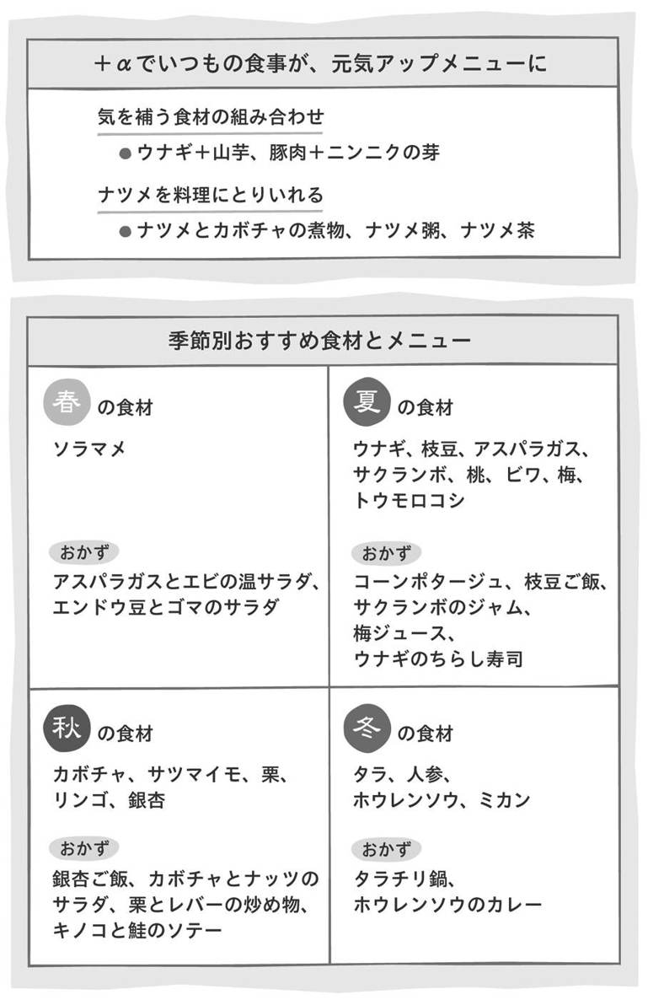
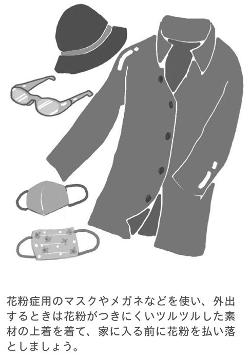

| 女性の不調は漢方でスッキリ! (2) [症状別の漢方と養生法] アトピー、PMS、ダイエット、冷え性、むくみ、更年期障害、便秘などを改善する impress QuickBooks | |
| 矢久保 修嗣 & 木下 優子 & 上田 ゆき子 | |
| (2015) | |
もくじ
この症状にこの漢方と養生法
症状
●万病のもと〝未病のサイン〟を見逃さずに
気や血の巡りを改善して、体を温める
●血を巡らせて、冷えを改善
●気を巡らせて、イライラを抑える
血を巡らせて、自律神経の安定を促す食材をとる
●ストレスをためず、軽い運動を
●無理をせず、体力回復に努めましょう
●体を温めて、妊娠しやすい状態に
●治療の中心は西洋医学。漢方でうまくサポートを
女性ホルモンをととのえて、血の巡りを改善する
●気を巡らせて、イライラを改善
●早めの対処で、悪化を防ぐ
体を温め、胃腸をいたわる
●原因を探り、痛みを解消
●血行を促して症状を改善
気、血を巡らせる食材と運動で改善
●急性の痛みは炎症を和らげ、慢性の痛みは温めて
●胃腸の働きを高め、快適なお通じを
水分と食物繊維をとり、砂糖を控える
●胃を温めて、消化を高める
甘味の食材で胃を補う
●余分な水分をとりのぞき、水の滞りを改善
水分を上手にとりながら、余分な水分をとりのぞく
●内臓をととのえて、早めに対処を
●温めて、血を巡らせる
●鉄分をとり、血を補う
血を補い、血と水を巡らせる
●生命エネルギーの不足を改善
気のあるものを食べ、気を補う
●ストレスを避け、自律神経をととのえる
●水を巡らせて、鼻水、くしゃみを改善
気、血、水のバランスをととのえる
ネギ、山芋、ミカンの皮、牡蠣の殻......
３章
この症状にこの漢方と養生法
この章で紹介している漢方薬は、医師の処方によるものです。
漢方薬を服用する際は、主治医と相談のうえ、ご使用ください。
冷え症
万病のもと〝未病のサイン〟を見逃さずに
漢方医学の考え方
＊症状
冷えは「万病のもと」と言われ、漢方医学では、〝未病のサイン〟の代表的な症状の一つです。
季節を問わず寒気を感じたり、常に手足やおなかが冷えていると感じている人は、冷え症と言えます。この冷え症は、次の３つに分けられます。
●手足の先端が冷える
女性に多いタイプです。原因は、血の巡りが滞る瘀血のため、体の隅々まで血が行きわたらなくなることだと考えられます。
●全身が冷える
高齢者や、過激なダイエットなどによって新陳代謝が衰えている人に多くみられます。代謝が悪くなり、エネルギーである気が不足して気虚になることで起こります。
●足先や下半身は冷えているけれど、頭や顔ののぼせがある
更年期の方に多くみられます。体力が落ち、気の巡りが滞る気滞から、気逆が生じ、のぼせがあらわれます。
月経困難症、不妊、頭痛、肩こりなど、女性に多いさまざまな症状は、冷えから来ることも稀ではありません。また、花粉症やアレルギー性鼻炎などの症状が、冷えによって悪化することもあります。冷えに悩んでいるという人は、一度、婦人科を訪ねてみることをおすすめします。
＊漢方処方
●手足の先端が冷えている場合
手足の先端の冷えは、瘀血が原因だと考えられるので、冷えに対する処方として代表的な漢方薬、当帰四逆加呉茱萸生姜湯を用います。
このほか、むくみがみられる人は水毒の可能性もあるので、当帰芍薬散を使います。当帰芍薬散は、婦人科系の多くの疾患に使われている処方です。生薬の当帰は、セリ科の植物の根で、漢方エキス製剤の約３分の１に使われています。また、当帰、芍薬には、血の巡りをよくする作用があります。
●全身が冷えている場合
新陳代謝の低下により、気が不足している気虚だと考えられますので、気を補ってあげる必要があります。
冷えのほかに、下痢や腹痛などもある人には、体の弱っている人によく処方される漢方薬、真武湯を使います。附子という温める作用のある生薬が組み合わされています。
衰弱もみられる人には、補中益気湯を処方します。さらに、貧血が見られる人には、十全大補湯を用います。補中益気湯、十全大補湯は、いずれも全身の倦怠感がある人に使います。養命酒も十全大補湯の類似処方が応用されており、人参、地黄、当帰など、血を増やし、体を温める生薬が使われています。
●足先や下半身は冷えているけれど、頭や顔ののぼせがある場合
手足や腰は冷えているのに、顔がカーッと熱くなったり、ほてったり、のぼせたりする人は、上に向っている気を降ろしてあげる必要があります。この場合は、気を降ろし、気の巡りをよくする漢方薬、加味逍遥散が処方の中心となります。
のぼせは、ときに収まったり、また突然カーッとあらわれたりするなど一定ではありません。加味逍遥散の逍遥という言葉には、気まま、散歩するという意味があり、そこから転じて変化する、揺れ動く症状がある人に適していると言われています。
このほか、手のほてり、口の乾燥がある場合には温経湯を使います。温経湯は、月経不順、不妊症など、婦人科系の疾患にもよく使われている処方です。
西洋医学の考え方
＊症状
体温となる熱は、主に筋肉でつくられているので、筋肉の量が少ない人や、ダイエットなどで新陳代謝が低下している人ほど冷えやすくなります。
また、ストレスや女性ホルモンのバランスの崩れも冷えを招きます。これは、ストレスによって自律神経が傷害されるためです。ここで、ストレスと女性ホルモン、冷えとの関係を説明しましょう。
ストレスがかかると、私たちは、まず自律神経に影響があらわれます。自律神経には、緊張状態にあるときに働く交感神経と、休息しているときに働く副交感神経があります。
ストレスのある状態が続くと、交感神経が優位に働き、このときアドレナリンの作用が強まる影響で、血管が収縮します。血管が絶えず収縮した状態になると、血行が悪くなって、これが冷えをつくる原因の一つになるのです。
自律神経にはこのほか、寒いときには体温を上げたり、冷えているときには体温を下げようと調節する働きもあります。
月経後から排卵までの時期は、女性ホルモンのエストロゲン（卵胞ホルモン）の働きが盛んになり、体温は低い状態になります。排卵後は、女性ホルモンのプロゲステロン（黄体ホルモン）が分泌されて、体温が高くなります。
自律神経と女性ホルモンは、どちらも脳の視床下部というところから指令を受けていて、互いに関係し合っています。どちらかのバランスが崩れると、もう一方もその影響を受けるのです。
なお、精神的なものだけでなく、生活の乱れや、冷房の効いている部屋に長くいたりすることも、体に対するストレスとなって、自律神経のリズムを乱れさせます。
自律神経には、私たちが意識しなくても、消化、呼吸、代謝、分泌などをコントロールする働きもあります。
また、女性の場合は、初潮、妊娠・出産、閉経など、女性ホルモンのバランスが大きく変化する機会が多く、自律神経のバランスが崩れやすいと言えます。そして、こうした変調期に冷え症になる女性が多いと考えられています。
＊対処法
西洋医学では、冷えは〝病気〟として、捉えられにくいものです。甲状腺機能低下症、心疾患など、冷えを感じる原因となる病気がある場合はその病気に対して治療を行いますが、冷えの症状そのものに対する有効な治療法はありません。
冷えを改善するためには、冷たい飲み物や食物を控える、薄着をしない、適度な運動をするなど、体を冷やさず、血行を促すように心がけましょう。また、次で紹介する冷えを和らげる食材も積極的にとりましょう。

冷えの食養
（気や血の巡りを改善して、体を温める）
冷えを改善するためには、体を温める温性、熱性の食材を意識してとりいれることが基本となります。
前項で紹介したように、冷えは３つのタイプに分けられます。それぞれのタイプによって症状があらわれる原因は異なりますので、その原因を改善するような食材を中心にとるようにしましょう。
食材の約70％は、体を温めたり冷やしたりしない平性ですが、それぞれ生で食べるよりも、加熱することで体を温める効果は高まります。
なお、白砂糖のとりすぎは、冷えを悪化させます。砂糖は、できる限り精製していない黒砂糖、メープルシロップ、とくに料理ならばみりんを使うようにしましょう。
●手足の先端が冷える場合
血の巡りが悪いために、体の末端まで血液が十分に行きわたっていないので、血行を促進し、体を温める食材をとるようにしましょう。
鮭、イワシ、カツオ、タラなどは血の巡りをよくする働きがあるので、主菜におすすめです。薬味や味つけには、温性の食材、ネギ、ニンニク、生姜、トウガラシなどを使うと効果的です。
●全身が冷える場合
気が不足していると考えられます。気が満たされれば、血や水も動きだして、体は温まるので、気を補い、胃を温めて、胃腸の働きをよくする羊肉や、温性で栄養価も高いエビなどをとるとよいでしょう。ただし、どちらの食材も温める性質が強いため、食べすぎると余分な熱を生じやすくなるので注意してください。
主食では、うるち米より、もち米の方が体を温める作用があります。しかし、もち米は、うるち米より消化がよくないので、消化を促す山芋や大根などと一緒に食べることをおすすめします。
●冷えのぼせがある場合
気の巡りを改善する食材を選びます。魚介類では、胃腸の機能を高める鮭やカジキマグロがこれにあたります。また、ミカンや金柑などのかんきつ類も、気の巡りをよくする作用があります。
野菜類は、タマネギ、ニラ、ラッキョウなどネギの仲間が体を温める働きをします。
これらの食材は、どのタイプの人にも合うので覚えておきましょう。なお、タマネギは、サラダなど、生で食べると、気の巡りをよくする作用があり、加熱して味噌汁などに使用すると、体を温め、消化器をととのえる作用が強まります。
コラム■飲み物は常温以上で、甘くないものを
冷え症の人が冷たい飲み物を飲むと、ますます冷えが悪化しやすくなります。消化器は、温まって初めて働くからです。飲み物は、常温以上、とくにおすすめなのは、白湯です。
最近では、コンビニエンスストアでも常温の飲み物を販売するようになっています。冷蔵庫から出したての飲み物は、温度が常温に近づくまで待ったり、レストランで水をもらうときは、氷を入れないようにしてもらったりするなど、できる限り、冷たくない飲み物を飲むようにしましょう。
それから、清涼飲料水も控えてください。市販の清涼飲料水には、角砂糖５～10個分ほどの糖分が入っていると言われています。砂糖には、水をためこむ性質があるため、水毒の原因となり、冷え症を誘発させるのです。
水毒があると、連動して血の巡りも悪くなります。水と血の巡りがセットで悪くて、冷えとむくみが生じている人は多いのですが、砂糖のとりすぎが原因になっている人も多いです。
また、野菜や果物のスムージーも体を冷やします。ただし、栄養はあるので、飲むならば、身体活動が盛んで体温が上がりやすい朝や日中にしたり、冬は控えるようにするなど、タイミングを考えてとりいれるようにしましょう。
月経困難証 血を巡らせて、冷えを改善
漢方医学の考え方
＊症状
腹痛や頭痛など、一般的に生理痛と言われている症状が月経困難症です。多くの女性にあらわれ、本人でないとわからないつらい症状が特徴で、日常生活に支障をきたす人もいます。
月経困難症の人の大半は、血の滞りである瘀血がある可能性があります。瘀血の程度はさまざまで、食養生や運動だけで、ある程度改善されるものから、漢方薬での治療が必要なものまであります。
痛みだけでなく、イライラ、倦怠感などがある人もいます。これは、ホルモンバランスの崩れやストレスなどによって気が滞る気滞、冷え、水が滞る水毒などが複合的に起こることが原因だと考えられています。
イライラや気分が落ち込むなどの症状が出る理由は、血や気が滞ると、自律神経を司る肝の働きが低下するためです。肝は、血を貯蔵しておくところであるとともに、怒りの感情にも繋がっているからです。
このほか、冷えも月経困難症の症状を悪化させますので、冷えがある場合には、治療が必要です。
婦人科には行きづらいと感じている人が多く、またついついがん検診などもおろそかになってしまいがちです。しかし、もしも、月経痛に悩んでいるようなら、ぜひ一度、婦人科を受診することをおすすめします。この月経痛が、子宮筋腫や子宮内膜症、あるいは子宮がんなどの大きな病気のサインのこともあるからです。
実際に検査をして、具体的な病気が見つからない場合は、痛み止めなどの対症療法が主となります。このようなときに、漢方薬がよく用いられます。
＊漢方処方
処方の中心になるのは、女性の三大処方と言われる当帰芍薬散、加味逍遙散、桂枝茯苓丸です。
瘀血に対する効果の強さを順番であらわすと、「桂枝茯苓丸＞加味逍遙散＞当帰芍薬散」となりますが、漢方薬の効果の強さで決めるというわけではなく、ほかにみられる症状で処方を決めていきます。
原則的には、月経困難症の症状が出ている期間だけではなく、毎日内服してもらうことになります。その理由は、痛みを感じるのは月経のときだけだとしても、その原因となっている瘀血や冷えは、常にあると考えているためです。
●色白でむくみやすく、冷えやすい場合
虚弱な女性のさまざまな症状に用いることができると言われている当帰芍薬散を用います。処方される人に、竹久夢二の絵に出てくるような儚げな感じの美人が多いことで知られていて〝当芍美人〟と言う言葉があるくらいです。
また、むくみの原因となっている水毒があるために、全体的にはほっそりしていますが、足首は引き締まっていないことが多いです。むくみによって、めまいや手足のだるさを訴えたり、冷え症があらわれる人もいます。
このほか、のどが渇きやすかったり、トイレに行く回数が人より少なかったりするのも水毒の徴候の一部です。
当帰芍薬散は、もともとは、妊娠時の腹痛の薬なので、腹痛に対する効果も定評があります。
●イライラしたり、症状がいくつもある場合
イライラなどの精神症状を伴う場合には、加味逍遙散を用います。
また、「イライラだけでなく、頭痛もあって、体がだるい」など、不調の種類が多い場合に対応するのも、この処方の特徴の一つです。不調の種類が多いと、医学的に説明の難しい不定愁訴だと言われがちですが、この不定愁訴こそが、加味逍遥散を使う目的の一つなのです。
漢方薬の名前についている逍遥とは、いろいろと移り変わるという意味で、この移り変わる症状に使う処方だからこそ加味逍遥散という名前がついています。症状がいろいろあって、なおかつ移り変わるというのがポイントなのです。
このほか、イライラが強くてキーッとなってしまう人で、下腹部が痛む人には、桃核承気湯がおすすめです。
●にきびや肩こりを伴う生理痛で、瘀血の症状が中心の場合
血の滞りによる瘀血で、にきびや肩こりがみられる場合には、桂枝茯苓丸を使います。瘀血があると、気の滞りも合併することが多く、のぼせを伴いやすくなります。
瘀血のある人は、おへその周りや舌の部分を押すと不快な感じや痛みがあることが多いので、自分で押してみるのもいいでしょう。舌や唇の色が暗くくすんで見えたり、眼の下にくまが見られるというのも瘀血の症状です。
また、桂枝茯苓丸は、別名、催生湯とも言われ、子宮筋の緊張を促す可能性があることから、妊娠中は飲むことができません。
このほか、ちょっと意外な処方としては、胃薬だと思われている安中散があります。これは、安中散に含まれる生薬、ウイキョウとエンゴサクに痛みをとる効果があるからです。もともと胃腸虚弱があり、胃痛を伴うような生理痛に用います。ウイキョウは、ハーブではフェンネルとも呼ばれ、消化促進などにも使われている植物です。
●生理痛がひどいときの頓用（症状が出たときや、つらいときなど、必要に応じて薬を服用）
月経中に痛みがあるときには、右記に紹介した処方と併用して、漢方薬の芍薬甘草湯や呉茱萸湯を用います。芍薬甘草湯は、おなかが引きつれるように痛むときに、呉茱萸湯は冷えや胃痛を伴うときに用います。
西洋医学の考え方
＊症状
月経が始まる前、あるいは月経時に伴う月経痛で、薬を飲んだり、日常生活に支障をきたすほどの痛みがあるものを月経困難症と言います。月経困難症には、ホルモンのバランスによるものと、子宮筋腫・子宮内膜症などによるものがありますが、ここでは、ホルモンバランスによる月経困難症について説明します。
月経困難症の痛みの原因には、子宮の強い収縮、骨盤内のうっ血、自律神経の乱れなどが挙げられます。そのなかでも、主たる原因と考えられているのが、子宮の収縮です。
月経になると、プロスタグランジンという生理活性物質が子宮内膜でつくられます。この物質が子宮の平滑筋という筋肉を強く収縮させることで、いらなくなった子宮内膜がはがれ、外に排出されます。これが月経です。このときの収縮が、過度だったり、収縮に対して過敏だったりすると、それが原因で痛みとして感じてしまうのです。
子宮が未発達で子宮口（月経血の通り道）が狭い場合や、子宮後屈など子宮の位置が正常ではない場合は、とくに痛みが起きやすいようです。
月経前緊張症（ＰＭＳ） 気を巡らせて、イライラを改善
漢方医学の考え方
＊症状
月経前や月経時に、腹痛、腰痛、頭痛、乳房の痛みや、吐き気、便秘やむくみ、イライラや不安感などの症状があらわれます。ひどいときは、立っているのもつらいほどで、生活に支障が出る場合もあります。
月経前緊張症（ＰＭＳ）の治療は、原則的には月経困難症と似ていますが、こちらの症状は、気の異常、気滞や気逆を伴うことが多いのが特徴です。
気の異常は、ストレスからくることが多いので、気分転換や適度な運動などの対策も大切です。
また、「生理前になると甘いものを食べたくなる」と言う人もいます。しかし、甘い物が瘀血を悪化させて、月経前緊張症に繋がっている場合もあります。
これらの症状があまりにも強いときは、子宮内膜症や子宮筋腫の可能性もあるので、医師を受診して検査してもらいましょう。
＊漢方処方
月経困難症の頁で紹介した女性の三大処方である桂枝茯苓丸、加味逍遙散、当帰芍薬散もよく使いますが、なかでも、月経前緊張症の場合は、気の異常が関係するため、気逆の治療によく使われる加味逍遥散の出番が多くなります。
また、月経前にのぼせやイライラが強くなり、もう、いてもたってもいられないという人で、体力のある人には、桃核承気湯がおすすめです。
このほか、当帰芍薬散や桂枝茯苓丸などと併用して、ストレスに効く処方を用いることがあります。代表的なものは、抑肝散や香蘇散です。
抑肝散は、今では認知症の、妄想を抱いたり、暴言、暴力などがあらわれる周辺症状に使うことで有名になっていますが、もともとは、子どものストレスの処方薬として使われていました。子どもの病気の際に、子どもと母親が同じ薬を飲む母子同服の処方としても知られています。お母さんにストレスがかかって、イライラしているために、子どもが落ちつかなかったり、逆に緊張していたりする場合に用います。
このことから、抑肝散は、もともと緊張しやすく、試験などであがりやすいという人にもおすすめの処方となっています。あがり症で困っている人は、試験や発表の前に１包服用してみるのも効果的です。
もう一つの香蘇散は、気分がしずみがちなときに使う処方なので、ちょっとしたことで気分が落ち込んだり、なんとなく気分がすっきりしない、月経前になると落ち込んでしまうという人に、当帰芍薬散と一緒によく使っています。
西洋医学の考え方
＊症状
ＰＭＳ（premenstrual syndrome）は、月経が始まる３～10日前の時期にあらわれるさまざまな症状のことを言います。
症状は、頭痛、腰痛、乳房やおなかの張り、むくみ、肌荒れやニキビ、便秘、眠気、倦怠感、そして、甘い物がいつも以上に食べたくなる人もいます。
その原因は、月経の約２週間前から排卵の時期までにプロゲステロン（黄体ホルモン）が増加して、女性ホルモンの分泌のバランスが大きく変化することだと考えられています。
このほか、ストレスが多い人、生活が不規則になっている人も、ホルモンのバランスの崩れによって症状が強く出やすくなります。
＊対処法
基礎体温をつけることで、女性ホルモンのバランスをある程度チェックすることができます。
また、月経前には、無理なスケジュールを組まず、ビタミンやミネラルをたくさんとり、睡眠や休息をたくさんとるようにしましょう。
痛みが強い場合には鎮痛薬、むくみには利尿薬、イライラや落ち込みなどメンタルの症状が強い場合には、抗うつ剤や精神安定剤など、精神科の薬を使うこともあります。

月経困難症、月経前緊張症（ＰＭＳ）の食養
（血を巡らせて、自律神経の安定を促す食材をとる）
月経困難症、月経前緊張症（ＰＭＳ）は、いずれも血を巡らせて、体を温め、自律神経や女性ホルモンのバランスをととのえることがポイントとなります。
＊月経困難症の場合
●月経血に黒い塊が混じる瘀血タイプ
月経血は、正常であれば鮮紅色でサラッとしていますが、月経血が黒ずんでいたり、血の塊のようなものが混じっていたりする人は、血が滞っている瘀血の状態だと考えられます。
血行が悪いので、月経の子宮収縮時に月経痛が起こりやすくなります。このような人は、血の流れをよくする食材をとりましょう。
代表的な食材は、タマネギ、サフラン、ウコンなどです。タマネギは、温性で胃腸を温め、消化を促し、利尿作用や気の巡りを改善する作用があると言われています。また、血栓を溶かす作用もあります。加熱するとうまみ、甘みが増し、価格も安定していて、和食にも洋食にも使え、とても優れた食材と言えるでしょう。
サフランは、パエリアの色づけなどで知られていますが、お湯に入れればサフランティーに、ご飯を炊くときに加えればサフランライスになり、普段の食事に手軽にとりいれることができます。
●冷えやむくみなどがある水毒の場合
冷えには、鶏肉や生姜などの食材がおすすめです。同時に、利尿作用のある小豆、トウモロコシ等の食材でむくみを改善しましょう。鶏肉、生姜、トウモロコシを入れたスープなら、冷えとむくみの両方に有効です。
＊月経前緊張症（ＰＭＳ）の場合
ストレスやホルモンバランスの乱れから、気逆や気滞になっていると考えられます。気逆は、中枢から下に流れるべき気が、上へと逆行している状態で、動悸や冷えのぼせなどの症状があらわれます。
このような場合は、気の巡りをよくする大根、のぼせて上昇した気を降ろす作用のあるソバなどをとり、気の流れを戻してあげましょう。さらに、精神を安定させる作用を持つユリ根やハスの実などをとるとよいでしょう。
自律神経のバランスをととのえて、肝の機能を助ける作用のあるレバー、牛筋、シジミ、ウナギ、トマトもおすすめです。また、ピーマン、クレソン、菊花には、肝の余分な熱を収める働きがあると言われています。
妊娠・出産 ストレスをためず、軽い運動を
漢方医学の考え方
＊症状
妊娠中の女性の体の変化には個人差があり、とくに不快感はなく、心地よく過ごしている人もいますが、つわりになったり、切迫流産や早産になったりするなど、予想できないことの連続です。
つわりは、とくに、においや食の嗜好には敏感になりがちで、今まで好きだった食べ物がおいしいと感じなくなったり、ご飯を炊くにおいも気になったりするなど、さまざまな変化が起こります。
その原因には、気の巡りが悪いことや水の滞りがあることが考えられます。妊娠すると、妊婦さんは、ほぼ全員、水毒になります。そのため、むくみが出たり、ひどい場合は高血圧になったりします。
また、血虚もよくみられる症状で、貧血や立ちくらみなどが起こることがあります。
一方の切迫流産や早産は、おなかの張りが強くなることで起こると考えられます。そこで、緊張をゆるめる作用のある芍薬を含む処方を使うことになります。
つわりは、赤ちゃんからのメッセージだという考え方もあります。食べないで欲しいものや、食べて欲しいものを赤ちゃんが伝えてきていると言うのです。
また、それまでの食生活や生活習慣によって母体に出ている影響を、この時期にリセットしようとしているという見方もあります。
どちらにしても、つらいことには変わりがないので、症状を少しでも和らげるようにするのがよいでしょう。
なお、食べられないと胎児が育たないのではないかと心配する人もいますが、そんなことはありません。食べられるときに食べられる物を食べたらいいと気楽に考えることが大切です。
妊娠の症状には個人差があり、また、同じ人でも、一人目はつわりが重かったけれど、二人目はそうでもなかったなど、妊娠するたびに異なります。しかし、つわりや妊娠高血圧症候群などは二度目も出ることが多いので、一回目の妊娠で症状があった人は早めに漢方薬を飲むことをおすすめします。
＊漢方処方
●妊娠時の万能薬は、当帰芍薬散
妊娠時に、もっともよく使われるのが、婦人科系の病気の処方としても代表的な漢方薬、当帰芍薬散です。安胎薬と呼ばれ、もともとは、妊娠時の腹痛の薬として処方されていました。
血虚に対する漢方薬なので、貧血に効果があり、また、水毒の漢方薬として、むくみを改善する作用もあります。そこで、現在では、腹痛に加えて、妊娠時の貧血や高血圧症候群に対する漢方薬としても使われています。
妊娠の初期から出産時にまで使うことができる便利な処方なので、一回目の妊娠で高血圧症候群やむくみが認められた人は、早い時期から内服をおすすめすることがあります。
また、不妊や習慣性流産のある人などにも処方されます。まさに、女性のための万能薬と言えます。
●つわりがある場合
よく使われる漢方薬は、香蘇散です。つわりには紫蘇がよいとされており、この香蘇散にも入っています。
吐き気に対しては、半夏と茯苓の組合せも有効で、小半夏加茯苓湯、茯苓飲合半夏厚朴湯が使われます。
また、胃腸のもたれや体力回復に効果のある人参湯を処方することもあります。
ただし、つわりがひどいときは、エキス剤すら飲みたくないと感じることがあります。その場合は、生薬を粉末にして内服すると飲める場合があります。それでもつらいときは、漢方薬ではなく、紫蘇酢なども効果があります。ドラッグストアでも売っているので、ためしてみるとよいでしょう。
つわりは、悪化すると入院になることもある症状です。体調が悪いときには、無理をせず、主治医に相談しましょう。
●風邪を引いた場合
よく使われるのが、香蘇散です。現在では、気分が落ち込むなど、抑うつの傾向のみられる人に使うことで知られていますが、もともとは、風邪の処方です。
風邪とは、読んで字のごとく、風の邪であり、気の巡りをよくすることで風邪を追い出そうというものです。
なお、風邪で咳や喉の痛みが続く場合には、麦門冬湯を使います。悪寒がして、風邪かなと思うようなときには、桂枝湯がおすすめです。
●むくみや妊娠高血圧症候群がある場合
むくみや妊娠中の高血圧には、水毒が関係していることが多いので、余分な水分をのぞく作用のある漢方薬、五苓散や当帰芍薬散を処方します。悪くなってから飲むのではなく、早めの内服が効果的です。
西洋医学の考え方
＊症状
妊娠中は、短期間でホルモンのバランスが変わるため、さまざまな不調が起こります。
具体的な症状としては、初期は眠気、頻尿、食欲不振、食欲増加、便秘、貧血、つわりによる吐き気やむかつきなどがあります。妊娠４～６週目から12～16週目の時期は、胃のむかつきや吐き気を感じるつわりが起こります。
つわりの症状が強く、食べ物だけでなく、水も受けつけなくなって脱水症状を起こすなど、日常生活に支障をきたすような場合は、妊娠悪阻と呼び、入院が必要になる人もいます。
また、妊娠中は、月経前に増えるプロゲステロン（黄体ホルモン）が、普段の何倍も出ることが原因で、むくみやすくなります。
中期以降になると、切迫流産、妊娠に伴ってみられる高血圧、たんぱく尿、むくみ、１週間位５００ｇ以上の体重増加などの症状の一つ、もしくは二つがあらわれる妊娠高血圧症候群の症状が起こりうる可能性があります。
妊娠後期（６ヵ月以降）は、基本的には安定期に入りますが、さらにむくみやすくなります。これは、おなかの中で大きくなった子宮が血管を圧迫して、血液やリンパの流れが悪くなるためです。
ほかにも、内臓が圧迫されたような感覚になり、息苦しさや、胃もたれなどがあらわれることがあります。これを第二のつわり、と呼ぶ人もいます。
また、ホルモンの影響と、大きくなったおなかの負担により、腰痛を起こしやすくなります。食欲が増加して、食べ過ぎや妊娠高血圧症候群や、切迫早産などの可能性もあります。
そのほか、妊娠期間中に、風邪を引いたり、花粉症の症状が出たりする人もいると思います。風疹の感染なども、問題になっています。しかし薬の服用は、漢方薬であっても絶対に自分では判断せずに、担当の医師に相談してください。
産後の不調 無理をせず、体力回復に努めましょう
漢方医学の考え方
＊症状
出血を伴い、体力を消耗する出産後は、気や血を消耗して、気虚や血虚の状態になりやすいと考えています。気虚が出ると疲れやすくなりますし、血虚になれば貧血になったり、立ちくらみが出たりします。白髪や脱毛が起こるのもこのためです。
疲れやすくなったり、本当は食べなければいけないのに食欲が出ないのは、気虚の症状のあらわれです。このとき、同時に、気がうまく巡らない気滞や瘀血の状態も起きやすくなります。出産後、子宮や膣から、中にたまっていた血液や胎児を包んでいた卵膜、子宮内膜のかけらが出血する悪露が続いたり、胎児の成長とともに大きくなった子宮が、出産後、収縮をくり返しながら元の大きさに戻っていく子宮の戻りが悪くなったり、おなかが痛くなったりするのはそのためです。
また、年月が経ってから、出産が原因の不調があらわれる例もあります。出産後、ときどき腹痛が出るようになり、あまり気にしていなかったけれど、10年以上経ってから、腹痛が慢性化するのです。産後のケアは大切なので、無理せず、ゆっくりと元の生活に戻していくようにしましょう。
＊漢方処方
●産後の諸症状を回復させる処方
産後、もっともよく使われる漢方薬は、芎帰調血飲です。瘀血と血虚を改善し、気の巡りをよくする効果があるので、子宮の戻りや、悪露の改善、マタニティブルーを軽くする効果があり、産後のすみやかな回復に有効です。多くの患者さんに内服することをおすすめする代表的な処方です。
疲労感が強く、貧血がひどい場合には、十全大補湯を処方します。俗に言う〝産後の肥立ちが悪い〟ときの処方です。貧血が進むと、母乳の出も悪くなるので、このような場合にも使用します。
十全大補湯は、脱毛にも効果があります。しかし、出産後の脱毛や白髪は、多くの人にあらわれ、たいていは回復するので、それほど気にしなくてよいでしょう。
このほか、脱毛や貧血には、芎帰膠艾湯を用いることもあります。これらの処方を使い、症状が落ち着いたら、芎帰調血飲に変更する場合があります。
●マタニティブルーで不安やイライラがある場合
もっともよく使われる漢方薬は、芎帰調血飲です。それでも落ち込みが強い場合には、香蘇散を、イライラが強い場合には、女神散を併用します。
それ以外に、もともとあがり症で、周囲に気を使うタイプは抑肝散を。不安が強く、怖い夢を見ることがあるなどという場合には、桂枝加竜骨牡蛎湯などを処方します。
●子宮の収縮による痛みが続く場合
子宮の収縮が強いのは、回復のためにはよいことですが、痛みが強い場合には和らげるために芍薬を含む処方、当帰芍薬散などを使います。
●乳腺炎で母乳がつまってしまう場合
葛根湯が有効です。ただし、マッサージなどとの併用が必要な場合が多いので、母乳マッサージや母乳外来も受診するとよいでしょう。
西洋医学の考え方
＊症状
妊娠、出産によって母体に起こる変化から、元の状態に戻るまでの期間を産褥期（６～８週）といいます。子宮や膣は出産後、すぐに元に戻るのではなく、徐々に収縮して小さくなり、それに合わせて、膨らんでいたおなかも徐々に元に戻っていきます。
子宮の収縮は、赤ちゃんが母乳を吸ってくれることでより早まります。この収縮によって、生理痛のような痛みがある場合があります。
同時に、悪露と呼ばれる経血のような血液や粘膜が混ざったおりものが出ます。悪露は、２～３日くらいまでは多く、赤い色をしていますが、その後、だんだん色も薄くなり、１ヵ月程度でほとんどなくなります。もしも、出血がいつまでも続くようなときは、婦人科で検査してもらいましょう。
また、産後は精神的に不安定になりやすく、ちょっとしたことで落ち込んだり、イライラしたりすることがあります。〝マタニティブルー〟と呼ばれ、ホルモンバランスの急激な変化や、出産後の疲れ、育児や家事のストレスや不安によって引き起こされるものといわれています。
しかし、マタニティブルー自体はほとんどの人が経験するもので、特別なことではありません。一人で悩まず、周囲に相談したり、家族に手伝ってもらったりするようにしましょう。症状がひどいと、不眠やうつに繋がる場合もあるので、専門家の診察やカウンセリングを早めに受けることが大切です。
いずれにしても、産後１ヵ月ほどは、無理をせずに安静にすることです。その間に、体力が回復したら少しずつできることから始め、日常生活のペースをつかむようにしましょう。
コラム■赤ちゃんも漢方薬を飲める？
漢方薬は、子どもからお年寄りまで幅広く使われるお薬です。もちろん、赤ちゃんでも、風邪や湿疹、夜泣きなどでは、よく処方しています。風邪の場合の漢方薬は、葛根湯、麻黄湯、麻杏甘石湯、麻黄湯と桂枝湯を半分ずつ使うなどします。湿疹がある場合は、治頭瘡一方、夜泣きには、抑肝散といった具合です。
漢方薬は、「飲みにくくて、子どもは飲まないのでは？」と言われることがありますが、意外と飲んでくれるものです。
また、妊娠中に漢方薬を飲んでいたお母さんから生まれた赤ちゃんは、漢方薬に抵抗が少ない印象があります。
うまく飲まないときの飲ませ方は、ミルクを飲んでいる赤ちゃんならば、少量のお湯で練って、ほっぺたの内側に塗り、そのあと、ミルクや母乳を飲んでもらいます。離乳食が始まっている場合は、ゼリーやヨーグルトに混ぜてもよいでしょう。乳酸菌飲料に混ぜて飲んでいる子もいます。
ちょっと変わった飲ませ方では、ママが漢方薬を飲んでから母乳をあげると、赤ちゃんが母乳の中の漢方薬を服用することになる、継母乳投与という方法もあります。味の好き嫌いもなく、飲ませやすいです。
ただし、漢方薬にも副作用はありますので、小さなお子さんに使うときには、必ず医師や薬剤師などの専門家に相談してから使ってください。
不妊 体を温めて、妊娠しやすい状態に
漢方医学の考え方
＊症状
不妊の原因は、漢方では、気虚や血虚、瘀血などいろいろありますが、とくに、影響していると考えられているのは、栄養状態が悪くなっている血虚や、血の巡りが滞っている瘀血などの血の異常と冷えです。この場合は、気虚も合併していることがあります。
冷えがあると妊娠しにくいのは昔から知られていて、後継ぎを生むお嫁さんの体を冷やさないように〝秋ナスは嫁に食わすな〟ということわざがあるほどです。
また、若い頃にダイエットをしていた人は、冷え症が起こりやすく、不妊の原因になっていることがあります。この場合、気虚や血虚を伴なっていることがあり、そもそも月経が不順だったり、月経がこなかったりする場合もあります。するとまず、月経不順や無月経の治療から始めなくてはなりません。月経自体は、西洋医学的に治療することができたとしても、生体のリズムをとりもどしてもらうために、漢方薬を併用することがあるのです。
いずれにしても治療は困難で、時間がかかるので、無理なダイエットはやめたほうがよいでしょう。ダイエットは、血虚の原因にもなります。
瘀血も不妊の原因となります。瘀血は、栄養不足だけでなく、運動不足や食生活によって誘発されますので、日頃から健康的な生活を心がけることが大切です。また、ストレスによる気滞も瘀血に繋がります。
＊漢方処方
西洋医学的な不妊の原因は、次項で説明しますが、卵管閉塞などの器質的疾患がある場合には、西洋医学的な治療を優先します。それ以外の場合も、漢方だけで治療するのではなく、西洋医学的な治療と併用して行う場合が大半です。
たとえば、いくら卵子がよい状態でも、受け入れる子宮の状態がよくなければ妊娠しません。このような場合は、漢方で全身と子宮の状態をととのえて妊娠しやすい状態をつくって、体外受精を行うなどの方法をとります。
●冷えがある場合
まず冷えの治療を行います。不妊治療の際によく用いる漢方薬は、当帰芍薬散や当帰四逆加呉茱萸生姜湯などです。生薬の附子末を加えてさらに温めたり、紅参末を加えて血流と栄養を改善したりもします。
過剰なダイエットなどで、気虚と血虚を合併しているときには、十全大補湯を用います。
●月経のリズムを元に戻す場合
排卵障害を伴う場合に、もっともよく使われる漢方薬は、温経湯です。必要に応じて、当帰芍薬散や十全大補湯などを用いることもあります。頻度は高くありませんが、生殖を司る腎が弱っている場合には、アンチエイジングの薬としても利用される八味地黄丸も使います。
●瘀血があり、血流を改善する場合
瘀血をとる漢方薬、桂枝茯苓丸などを処方することがありますが、子宮筋の緊張を促す可能性があるので、中期以降の内服は流産の危険があると言われています。そのため、妊娠がわかったら、すぐに内服を中止する必要があります。必ず専門家に相談して服用してください。
●男性にも漢方薬を一緒に飲んでもらう場合
疲労回復に効果がある漢方薬、補中益気湯は、精子の運動率を高める可能性があると言われていて、よく使われます。アンチエイジングの処方である八味地黄丸も人気があります。この二つは、ご夫婦で仲良く飲んでいるケースも多い処方です。
西洋医学の考え方
＊症状
避妊をせず、普通の夫婦生活を送っていて、２年以上妊娠しない状態のことを不妊と定義しています。 不妊かなと思ったら、原因を調べるために、まず検査をする必要があります。
基礎体温をつけることから始まり、血液検査、ホルモンの値を調べる検査、卵管が狭くなっていたり詰まっていたりしないかを調べる子宮卵管造影、性交後、子宮頸管粘液の中にある精子の状態を見るフーナーテストなど、さまざまな検査があります。すべての検査を終了するのに、１ヵ月ほどかかります。
女性側の不妊の原因としては、排卵障害や高温期が短い黄体機能不全などの卵巣機能の障害、卵管がつまっていて卵子が通過できない卵管閉塞などの理由があります。子宮内膜症や子宮筋腫も不妊の原因になります。毎月月経があっても排卵していない場合もあります。
女性の側に原因があるとは限らないので、通常は男性の精液検査も一緒に行います。
男性側の原因としては、精子の数が少なかったり、運動率が悪かったり、奇形率が多かったりすることがあげられます。
しかし、男女ともに、検査では全く異常がないのに、妊娠しない場合もあります。これらは、原因不明不妊、あるいは機能性不妊と言われます。
＊対処法
最初は、排卵日を予測して、その前後に性交を行うタイミング法で様子を見ます。
それで妊娠しない場合は、とりだした精子を、カテーテルを用いて子宮や卵管に入れる人工受精を行います。それでも難しい場合は、精子と卵子を体外で受精させて、受精卵を子宮の中に移植する体外受精を行います。このとき、精子と卵子が受精しない場合は、顕微鏡で確認しながら、精子と卵子を受精させる顕微授精を行います。
コラム■習慣性流産、不育症について
流産は、決して珍しいことではありません。年齢差や個人差はありますが、妊娠した人の約10～15％は流産になると言われ、比較的多くの人が経験しています。
流産には、さまざまな状態があります。自然に起きる流産、そして、体内で胎児は死亡しているけれど、まだ出血、腹痛などの症状がない稽留流産などです。
妊娠はするけれど、その後、流産や死産をくり返す状態を不育症、習慣性流産と言います。３回以上くり返す場合には、習慣性流産として原因を調べ、治療することが望ましいとされています。
なお、妊娠反応は陽性で、子宮の中の赤ちゃんの袋が見える前に流産してしまう化学流産の場合は、不育症としての流産の回数には含まれません。
しかし、流産は女性の心身に大きな負担になることであり、ご本人の希望で２回目の流産をきっかけに検査をするということも少なくありません。
また、この段階で、体質をととのえるために漢方薬を処方する場合があります。漢方薬で不育症に効果があるとされているのは、柴苓湯です。漢方医だけでなく、産婦人科の先生方も処方される漢方薬です。それ以外では、婦人科系の疾患によく用いられる当帰芍薬散を処方することもあります。
子宮内膜症・子宮筋腫 治療の中心は西洋医学。漢方でうまくサポートを
漢方医学の考え方
＊症状
子宮内膜症や子宮筋腫は、月経痛が強くなったり、月経の期間が長くなる、出血量が多くなるなどの症状があらわれます。
これらの症状や、ホルモン療法によって、イライラしたり、のぼせたりする症状をとるためには、漢方の治療を行います。
漢方では、子宮内膜症や子宮筋腫の原因は、血の巡りが悪くなっている瘀血によるものと考えられていて、どちらの病気であっても病気自体の改善のためには、瘀血を治療する漢方薬を使います。
また、冷えが関係して症状が悪くなっている場合もあるので、冷え症を改善する処方もよく使われます。
しかし、実際に漢方薬だけで、子宮内膜症や子宮筋腫を治療するのは難しいため、西洋医学的な治療が中心になります。そこでは、漢方薬はつらい症状の軽減や、治療による副作用の軽減のために用いられます。
＊漢方処方
●瘀血を改善する場合
まず、病気自体が瘀血によって引き起こされていると考えられることと、月経痛の原因となることから、血の巡りをよくして、瘀血を改善する処方がよく使われます。
代表的な漢方薬の処方は、桂枝茯苓丸です。それ以外にも、桃核承気湯や通導散や大黄牡丹皮湯などがありますが、副作用として下痢があるため、使用には注意が必要です。
このほか、長年続く瘀血に効果があるとされていて、不安感やイライラするなどの精神的な症状にも効果がある漢方薬、芎帰調血飲を用いる場合もあります。
●冷え症が強い場合
冷えの代表的な処方である漢方薬、当帰四逆加呉茱萸生姜湯を使うことで、冷えに伴う痛みが改善する場合があります。
このほか、むくみや、胃の中でぽちゃぽちゃと水の音がする水毒の症状が強い人には、当帰芍薬散が有効です。
●出血が多い場合
止血効果のある漢方薬、芎帰膠艾湯を使います。
●治療のホルモン剤による副作用
代表的な処方は、婦人科系の病気の多くの症状に使われる加味逍遥散です。
ホルモン剤を使うと閉経に近い状態になるので、更年期障害症候群のようなのぼせ、イライラなどの症状が出やすくなります。そのため、更年期障害症候群の治療薬と同じ処方がよく使われます。たとえば、のぼせが強いときには、生薬の当帰、香附子などを組み合わせた女神散を用います。
西洋医学の考え方
＊症状
子宮内膜症のおもな症状は、月経痛、性交痛、下腹部の痛みなどです。一方の子宮筋腫の症状は、月経期間の長さ、多量の出血、下腹部のしこりや痛みなどで、いずれも不妊の原因にもなっています。
おもな原因は、女性ホルモンのエストロゲン（卵胞ホルモン）が過剰になることで、生じると考えられています。
子宮内膜症とは、本来は子宮の内側にしかないはずの子宮内膜の組織が、子宮の内側以外の場所にできてしまう病気です。
通常、子宮内膜は、妊娠が成立しないとはがれ落ちて排出されますが、子宮内膜症の場合は、内膜の組織の一部が卵管を通っておなかの中にこぼれて落ち、その一部がおなかの中で増殖した状態になり、月経に伴って、炎症やほかの組織との癒着、出血を起こしたりします。
一方の子宮内膜症の種類には、卵巣の内側に子宮内膜の組織が入りこんで増殖したり、癒着したりする卵巣チョコレート嚢胞、ダグラス窩と呼ばれる子宮と直腸の間で、子宮内膜の組織が増殖したり癒着するダグラス窩閉塞などがあります。
子宮筋腫は、女性ホルモンの影響によって、子宮にできた良性の腫れ物のことで、一つだけできることもあれば何十個もできる人もいます。大きさは、顕微鏡で見ないとわからないくらい小さなものから、数十センチに及ぶものまであります。
子宮筋腫ができると、その周囲に新しい毛細血管が張り巡らされます。腫れ物は、その血管から栄養をもらって大きくなり、そのため、月経が長引いたり、月経血の量が増えたりするのです。また、子宮筋腫に子宮内膜症が合併して起こることもあります。
＊対処法
子宮内膜症の治療は、低用量ピルや黄体ホルモン製剤などで、内膜の増殖を抑える薬物療法や、手術療法があり、年齢や妊娠を希望するかどうかによって、治療法を選択することとなります。
なお、薬物療法には、痛みを抑えるための対症療法や、必要に応じて行うホルモン補充療法があります。
対症療法は、病気の進行を抑える効果はないので、定期的に受診しながら、経過を診ていくことになります。手術療法は、大きなサイズの卵巣チョコレート嚢胞が見つかった場合などに行います。
子宮筋腫の治療もほぼ同様で、ホルモン剤などの薬物療法で症状を抑えたり、手術で筋腫だけ、あるいは、子宮全部を摘出する場合などがあります。
子宮内膜症・子宮筋腫の食養
（女性ホルモンをととのえて、血の巡りを改善する）
●イソフラボンでホルモンバランスをととのえる
ホルモンバランスを整える代表的な食材は、植物性エストロゲンとも呼ばれている大豆です。
大豆には、女性ホルモンに似た構造をしている栄養素、イソフラボンが含まれています。エストロゲン（卵胞ホルモン）が足りなければ補い、多すぎるときには減らそうとする作用があると言われています。
●血を補う食材をとる
子宮内膜症は、子宮から大量の血液が排出され、月経量が増えることがあるので、貧血を起こしやすい傾向にあります。そのため、血の巡りを促す食材をおすすめします。鶏レバー、豚レバー、ホウレンソウ、春菊、ヒジキ、シジミ、牡蠣、黒キクラゲなどは、鉄分が多く含まれています。
●カルシウムで骨を守る
エストロゲンは、骨をつくる働きもあります。ホルモンのバランスが崩れてエストロゲンが減少すると、骨量が減少するので、カルシウムも摂取することをおすすめします。実際、治療の際に、ホルモンバランスの調整などで、骨の中のカルシウムが失われる副作用が起こることも稀にあります。
カルシウムを多く含む食材は、チーズなどの乳製品、ワカメ、昆布、ヒジキなどの海藻類です。
なお、ホルモンのバランスを崩しやすい食材は、精製された白砂糖、白い小麦粉、白米。動物性脂肪が多く含まれる肉類、乳製品などです。
更年期障害症候群 気を巡らせて、イライラを抑える
漢方医学の考え方
＊症状
更年期障害とは、おもに、閉経を挟んだ前後10年くらいの間に、のぼせやほてり、顔が赤くなる、息切れ、イライラしやすい、発作的な頭痛、動悸がする、手足に汗をかくなどの症状があらわれます。その多くは気逆の症状と一致しています。そこで漢方では、気逆の治療をおもに行います。
気逆が起こる原因は、更年期の前後に、五臓の腎が加齢によって衰えることで、ほかの臓腑とのバランスが悪くなるためだと考えられます。
気逆になると、うまく巡れなくなった気が上昇して、気が不足します。これが、頭はのぼせるけれど足は冷えるという〝冷えのぼせ〟が起こる原因です。
また、気は血や水に比べて動きやすい性質をもっているので、症状が移り変わりやすくなっています。これが、「更年期は不定愁訴」と言われる原因の一つです。
なお、気の流れは呼吸や運動によってととのいやすくなります。つまり、更年期障害は、日頃から適度な運動をすることで軽減できるのです。
逆に、もともとストレスがあったり、気分が落ち込みやすく、気に異常が疑われる症状がある人は、更年期の症状も出やすくなっているので注意が必要です。
そして、更年期の症状が気逆の症状とよく似ているために、更年期ではない気逆の女性が、「自分も更年期？」と考えてしまうこともよくあります。
更年期障害は、卵巣機能の衰えによるエストロゲン（卵胞ホルモン）の急激な低下によって起こるものなので、きちんと月経がある若い人などの場合には当てはまりません。
ただし、漢方治療はどちらも気逆の治療になるので、結局、両方に加味逍遥散が処方されることが多いのです。
＊漢方処方
●更年期障害のＮｏ１処方・加味逍遥散
「更年期障害と言えばこれ！」と言うくらい代表的な気逆の処方が、加味逍遥散です。
逍遥という処方名は、そぞろ歩きという意味もあり、移り変わる多彩な症状があるときによく使われます。冷えのぼせや動悸などの身体症状と、イライラや落ち込みなどの精神症状の両面に効果があります。
加味逍遥散以外の気逆の処方としては、のぼせが強いときに使う女神散、唇の乾燥や手のほてりを伴うときに使う温経湯、あまりひどくないけれど、どこかがずっと痛むときに使う五積散などがあります。女神散は、症状が移り変わる加味逍遥散に対して、一つの症状を訴える人に用います。
●全身の倦怠感や貧血がある場合
女性の三大処方である当帰芍薬散や、十全大補湯など、血虚を改善する処方を使います。当帰芍薬散は、体が弱く、冷え、貧血がある人にも処方されています。
また、十全大補湯も、体が虚弱で、貧血、疲労などとともに、産後、病後などで体力を弱っている場合にも使われます。
●アンチエイジングの処方、八味地黄丸
足がつる、かかとが痛む、目がかすむ、手足の先がしびれる、腰が痛いなど、腎に関わる症状が強いときには、八味地黄丸を使います。
八味地黄丸には、地黄、山茱萸、山薬、沢瀉、茯苓、牡丹皮、桂皮、附子という８つの生薬が使われています。疲れやすい人や下半身の冷えがある人、糖尿病の副作用を軽減する目的や、高齢者の頻尿などにも使われるアンチエイジングの漢方薬です。
ただし、体の冷えをとり除く作用があるので、ほてりやのぼせがある人にはおすすめできません。
八味地黄丸でほてりが強くなってしまう場合には、温める作用のある桂皮、附子の二つの生薬を除いた六味丸にします。単独で処方するだけでなく、加味逍遥散との併用も行います。
西洋医学の考え方
＊症状
40代後半から50代半ばまでの閉経前後のいわゆる更年期と言われる時期になると、卵巣の機能が低下して、女性ホルモンのエストロゲン（卵胞ホルモン）が急激に減少します。
そのため、ほてり、のぼせ、発汗、動悸、頭痛、便秘、イライラ、落ち込み、不眠、肌荒れなど、実にさまざまな不快な症状が起こります。
体の変化もさることながら、女性は、30代から50代にかけて、出産、子育て、子離れ、人によっては親との別れなど、実に変化が多く、精神的にもストレスのかかる状況にあります。この環境要因によって、症状がより悪化することもあります。
更年期障害の西洋医学的な治療としては、減少した女性ホルモンを補うＨＲＴ（hormone replacement therapy. ホルモン補充療法）があります。
ＨＲＴは、乳がんや子宮がんになるリスクが増えるといって恐れる人がいますが、乳がんになる確率は１万人に３人程度の増加です。
また、乳がんの人とそうでない人だと、そうでない人のほうがＨＲＴをしている人が多かったというデータもあります。
乳がんや子宮がんはむしろ、早期発見することが大切なので、きちんと検診を受けて、早期に治療するほうが重要だと考えられています。
しかし、ＨＲＴはやりたくないと言う人に無理やりおすすめする治療でもありません。主治医の先生ときちんと相談して、納得したうえで、治療を受けましょう。
一般的に、急にのぼせるなどの血管運動神経性障害が見られるときにはＨＲＴが有効です。
これに対して、症状が多い、気分の落ち込みやイライラなどの精神的な症状が主といった場合には、漢方治療が向いています。
ただし、更年期障害だと思っていたらうつ病だったというケースもあります。おかしいなと感じたときは、ぜひ受診してください。
風邪 早めの対処で、悪化を防ぐ
漢方医学の考え方
＊症状
風邪の初期は、体のだるさ、せき、くしゃみ、鼻水、寒気、頭痛などがあり、悪化すると、発熱、吐き気などの症状があらわれます。
原因は、邪気が鼻や口から肺に入ることで引き起こされます。
同じ環境にいても、風邪を引く人と引かない人がいますが、これは、風邪そのものの強さや、本人の体の強さが異なるためです。気、血、水のバランスがとれていて、それぞれがスムーズに巡っていれば、風邪が入ることを防げます。しかし、バランスがとれずに、とくに気が弱っていると、風邪が体の奥に入り込み、諸症状があらわれます。
インフルエンザに対する漢方薬では、麻黄湯がウイルス薬のタミフルに勝るとも劣らない作用があると言われています。また、中国では板藍根という生薬が処方されることもあります。
＊漢方処方
風邪の範囲はとても広いので、風邪の性質を見分けて、対応する必要があります。それには、身体を温め、免疫能力を高めて、風邪を外に出す治療を行います。
●悪寒や頭痛を感じる風邪の引き始めの場合
悪寒、頭痛、体のだるさがあり、鼻汁、くしゃみ、せきは、風邪の引き始めです。この段階で対処すれば、普通の風邪ならば悪化を防げます。
この場合、もっとも有名な漢方薬の一つである葛根湯を処方します。
ただし、葛根湯は、比較的体格がよく、胃腸が丈夫な人に適している漢方薬なので、体の弱い人にはおすすめしません。
体力がない人、お年寄りには、桂枝湯、麻黄附子細辛湯を使います。
●鼻水が出る場合
くしゃみや水っぽい鼻水が出ている場合には、小青竜湯を使うと速効性が期待できます。これは、花粉症にも使われる漢方薬です。
鼻水に粘りがある場合は、葛根湯加川芎辛夷が有効です。日本でつくられた処方で、鼻づまり、蓄膿症、慢性鼻炎に用いられています。
西洋医学の考え方
＊症状
咳、鼻水、くしゃみ、頭痛、発熱などのつらい症状が起こります。その原因は、約９割がウイルス感染によるものだとされています。ウイルスの種類は１００以上もあると言われていて、風邪のためにウイルスを特定して、ピンポイントに治療するということはしません。
そもそも、日本では多くの人が、風邪を引くと病院に行きますが、外国では自宅で体を休めて様子をみるのが一般的です。
本来ならば、風邪の症状が収まるまで、安静にしているのが一番よいのです。
しかし、日本人は、〝会社に行かなければならない〟〝家事をしなければいけない〟と非常に勤勉な人が多いので、風邪を治して、すぐに活動を始める人が多く、そのために悪化してしまう人もいます。
＊対処法
発熱には解熱剤、咳には鎮咳去痰薬など、それぞれの症状を抑える西洋薬を処方して、経過をみます。多くの場合は、１週間程度で症状が緩和しますが、それ以上続くようであれば、別な病気の可能性もあるので、改めて受診することをおすすめします。
風邪の食養
（体を温め、胃腸をいたわる）
●風邪の初期は体を温める
体の節々の痛みやだるさ、頭痛、鼻水などの症状とともに、布団をかぶっていたくなるような悪寒などがある場合、風邪の可能性があります。
ご自身で風邪かそうでないかを判断することはできないと思いますが、もしも風邪だと感じたら、脱水予防に、できれば温かい飲み物で水分補給をして、すぐに寝ることをおすすめします。
一般に〝風邪には栄養と休養が一番〟と言われていますが、初期の場合は、食欲がなければ無理に食べる必要はありません。
なぜでしょうか？ 風邪を引いたとき、普段は大好きな食べ物が食べられなくなったり、美味しいと感じなくなったことはありませんか？ 味覚が変わったり、食欲がなくなったりするのは、そのときの自分の体が食べ物を欲していないということなのです。
これは、風邪を引くと消化機能が衰えるからです。そのため、風邪の引きはじめは、消化器に負担をかけないよう、食事は控えめにし、胃腸も休ませたほうが回復は早まります。
このような状態の場合は、おなかに優しく、体も温まる生姜湯や葛湯がおすすめです。葛は葛根湯の主成分です。寒気を追い払い、気を巡らせ、免疫力を高める働きがあります。葛湯にはおろしショウガを加えるとさらに温まります。食材で体が温まると、薬の効果も高まります。
悪寒がなくなり回復してきたら、胃に負担をかけない、消化がよいと言われているものから、少しずつ食べるようにしましょう。うどんやおかゆなどの穀物を中心に、やわらかく煮たジャガイモ、白菜、カボチャなどを一緒にとるとよいでしょう。
栄養素の面で言えば、野菜は煮込むとビタミンＣや酵素などが失われますが、それにこだわって非加熱のものばかり食べていると、体が冷えてしまいます。風邪のときは、消化がよく、体を温める調理法で、胃腸をいたわりながら、栄養をとることが先決です。
●発熱したら、熱を冷ます作用のある食べ物を
発熱は、私たちの体が、ウイルスと戦うために体温を上げようとしていることで起こります。体が頑張っているのです。
熱が上がりきると、通常は寒気を感じなくなります。このような状態になったら、冷たいものを口にすると気持ちがよいと感じるでしょう。口あたりのいいゼリーやプリンなど、少し冷たいものを食べても構いません。
また、こもった熱を下げるためには、発汗作用のある食材をとって汗をかくと、回復が早まります。生姜、ネギ、ニラなどがおすすめです。
●熱に加えて便秘がある場合は腸を刺激
風邪で熱が上がると、熱によって体の中の水分が失われ、胃腸も弱るだけでなく、便秘になりやすくなります。西洋医学の風邪薬の影響で、腸の働きが弱まる場合もあります。
熱でつらいうえに、おなかが張って苦しいときは、柑橘系のジュースやトマトジュースなど腸を刺激するものを飲んでみてください。便が出ると、熱も外に出せるようになるので、少し楽になります。
●風邪の諸症状の食養
寝込むほどではないけれど、咳やのどの痛みなど風邪の諸症状があって、つらいということもあるでしょう。そのようなときに、有効な食養をご紹介します。
〈空咳が出る場合〉
痰を伴わない空咳には、梅、梨、ユリ根などの食材が効果的です。梅や梨には、肺の機能を回復させる作用があります。とくに梨は、山芋と一緒に煮て、くず粉でとろみをつけると咳止めになります。咳止めには、大根も同様の効果があります。なお、梨は寒性で水分が多いので、微熱があるときにも効果的です。
ユリ根も、肺を潤し咳を抑えます。ユリ根を乾燥させたものは、百合という生薬で、漢方薬に用いられています。野菜の中では、粘膜を丈夫にするビタミンを多く含みます。空咳には、ユリ根のしぼり汁にお湯を加えて飲むとよいでしょう。
〈湿った咳が出る場合〉
痰のからんだ湿った咳に効く食材では、カリンや大根が知られています。カリンには、痰を除いて咳を鎮める作用があります。生のままでは渋くて食べにくいので、ハチミツやお酒に漬けて利用しましょう。
カリンの種には、そのまま食べると中毒の可能性があるアミダグリンが多く含まれますが、種を煎じると咳止め効果があるとも言われています。
大根は、痰を出やすくし消化を促進します。ハチミツか水飴に漬け、できた汁を飲むとのどの痛みや咳に効き目があります。
〈くしゃみ、鼻水が出る場合〉
くしゃみや鼻水がひどいときは、体を温める食材をとるようにしましょう。前述のクズや大根をはじめ、ニラ、長ネギ、紫蘇、生姜、ニンニクなどです。
ニラは胃腸を温め、気の巡りを改善させ血液の循環も促します。長ネギや紫蘇も、気の巡りをよくし、発汗作用で風邪の寒気を除きます
■穀物は食養の要
漢方では穀物は基本の食材です。穀物は体に一番害が少なく、胃腸が弱い人にも、冷え症の人にも暑がりの人にも悪さはしません。
風邪で何も食べたくないというときは、休養をとったあとに、おもゆなどから始めて、五分粥、全粥と進み、野菜類やタンパク質を増やしていきましょう。
頭痛 原因を探り、痛みを解消
漢方医学の考え方
＊症状
後述する西洋医学的な検査をしても、原因となる病気がみつからず、慢性の頭痛がある場合には、漢方で痛みを緩和する治療を行うこともできます。
体の冷えや、血が滞る瘀血、ストレスによって気の巡りが停滞している気滞、体内に余分な水分がたまっている水毒、肩こりなど、頭痛になる原因はさまざまな要素が考えられます。その原因を見極めて、頭痛を改善します。
＊漢方処方
●手足が冷えて、吐き気を伴う片頭痛の場合
冷えたときなどに激しい頭痛を起こし、吐き気を伴うような場合には、体を温めて気、血の流れをよくする漢方薬、呉茱萸湯が有効です。
●冷えのぼせがあり、肩こりを伴う場合
首や肩のこりを伴う頭痛は、血が滞る瘀血が引き起こしていると考えられます。瘀血を解消する桂枝茯苓丸などを使います。
●めまいやむくみがある場合
水の流れが停滞していると考えられるので、利尿作用があり、水の巡りをよくする五苓散が有効です。
●風邪などが原因の場合
発汗作用のある葛根湯で痛みが和らぎます。葛根湯は、肩や首のこりがあるときにも有効です。
西洋医学の考え方
＊症状
頭痛は、首や肩のこりなどを伴い、頭が締めつけられるように痛む〝緊張型頭痛〟、脳の血管が広がって脈打つように痛む〝片頭痛〟などいくつかのタイプに分けられます。
緊張型頭痛は、ストレスや疲れ、同じ姿勢を続けることなどによって起こります。片頭痛は、月経周期に合わせて月経前や月経中にも起こることがあります。
＊対処法
急に激しい痛みが起こったときや、慢性の頭痛が続くとき、痛みがだんだん増しているようなときには、脳腫瘍や脳血管疾患などが原因で頭痛が起きている可能性もあります。脳神経外科などを受診して、重大な病気がないかどうか検査することが大切です。
自己判断で市販薬を使い続けていると、悪化させることもあるので、病院を受診して、鎮痛剤や抹消循環改善薬など、自分の頭痛のタイプに合った薬を処方してもらいましょう。
月経周期に関連して起こる頭痛の場合は、低用量ピルで軽減することもあります。
肩こり・首の痛み 血行を促して症状を改善
漢方医学の考え方
＊症状
肩こり・首の痛みにはいろいろなタイプがありますが、漢方では、気や血の流れの滞りである気滞、瘀血、が原因だと考えられています。また、冷えも、血の巡りを悪くして肩こりを起こす原因になります。
肩こりを放置したままでいると、気、血の滞りによって、頭痛やめまいなど、さらなる不調を引き起こす可能性があります。気、血の流れをよくする漢方薬や運動によって、体調はよくなり、肩こりも楽になります。
＊漢方処方
●急に肩こりがある場合
仕事が忙しくなるなど、環境の変化によって肩が急にこるようになったときには、血行をよくする漢方薬、葛根湯が効果的です。
●ストレスが多く、冷えやのぼせがある場合
肩こりがあって、手足が冷えたり、頭がのぼせたりするようなときは、ストレスで気の流れが悪くなっている可能性があります。このような症状には、加味逍遥散が有効です。
●体が弱く、冷えやすく下半身にむくみがある場合
冷えやむくみを改善する作用がある当帰芍薬散を使います。
西洋医学の考え方
＊症状
肩や首回り、背中がかたくなり、痛みがひどくなると、頭痛や吐き気を起こしたりする場合があります。このような肩こりは、筋肉の疲労により、血行が悪くなることで起こります。
こりや痛みがあると、筋肉が緊張して血行が悪くなり、こりがさらに悪化するという悪循環に陥るという状態が慢性的な肩こりです。
また、女性ホルモンの減少によって血行が悪くなり、肩がこる場合もあります。
＊対処法
血行をよくする必要があります。そのためには、長時間、同じ姿勢を続けることは避け、ストレッチや肩まわりをこまめに動かす体操をすることで、肩こりを予防・改善できます。
また、痛みと緊張、こりの悪循環を断ち切るために、湿布や消炎鎮痛剤、筋弛緩剤の飲み薬などで症状を和らげる治療法もあります。同じ動きをしたときに痛みがあるときは、筋肉を痛めている可能性もあるので、整形外科を受診しましょう。
肩こりの食養
（気、血を巡らせる食材と運動で改善）
●いつも表に出ている肩はこりやすい
多くの場合、エアコンは室内の天井や上のほうに設置されています。そのため、冷房をかけている部屋では、たいてい冷気が当たるのは肩のあたりです。また、お風呂に浸かっているときや、布団をかけて寝ているときも、肩は外に出て冷えていることが多いものです。つまり、肩は常に冷えがちなのです。
冷えた肩の部位では、筋肉が固くなり、循環障害が起きています。循環障害とは、血液などの巡りが悪くなっていることで、漢方では気滞、瘀血、水毒が関係します。
そのため、肩こりを改善する食材は、気や血を巡らせるものが中心になります。
●急な肩こりがある場合
長時間のデスクワークなどで、急に肩がこるようになった場合には、血の巡りが悪くなっていると考えられますので、血流をよくする食材がおすすめです。
血管を広げ、血を巡らせる働きをする食材は、納豆、ニラ、菜の花、イワシ、ウナギなどです。
大豆のたんぱく質は、そのままの状態よりも、発酵させた納豆のほうが吸収されやすくなります。ネバネバしている部分は、ナットウキナーゼというたんぱく質分解酵素が含まれていて、血栓を予防する効果があります。つまり、血流を改善するので、肩こりの緩和にも役立ちます。
なお、朝に納豆を食べる人も多いと思いますが、血流は夜寝ている間のほうが滞りやすいので、夕食にとるほうが効果的です。
●ストレスによる肩こりがある場合
ストレスと気は直結しています。気の滞りによって、血の巡りも悪くなり、肩こりが生じている場合は、気を巡らせる食材をおすすめします。
大根は、気の巡りを促す作用があり、胃腸の働きを高めます。生のままでは、涼性で体を冷やしますが、加熱すれば冷やすことはありません。
タマネギは、胃腸を温め、気の巡りを改善します。気の巡りがよくなると、体は温まり、肩のうっ血も解消されやすくなります。
また、ストレスには、柑橘類など酸味のある食材が効果的です。ミカンは、気の巡りをよくし、消化吸収を促します。抗酸化作用もあり、疲労回復にも繋がります。ミカンの皮を干したものは陳皮と呼ばれ、漢方に用いられます。苦みが湿邪を除き、辛味が気を巡らせるなどの働きがあり、「百病に効く」とも言われます。
なお、気の滞りによって、冷えやのぼせが起こっている肩こりには、大根、タマネギ、ラッキョウ、紫蘇、鮭など、気の流れをよくし体を温める食材が有効です。
●むくみを伴う肩こりの場合
むくみを伴う肩こりは、水分の代謝が悪くなっていることが原因と考えられます。体の水分バランスは五臓の腎が関係しているので、ハトムギ、黒豆、金針菜、ナズナ、スイカ、ブドウなど、利尿作用と腎を補う働きをもつ食材をとりましょう。
金針菜は、ホンカンゾウという花を乾燥させたもので、水分の代謝をよくする作用や、精神を安定させる作用があります。鉄分やカルシウムも豊富で、貧血や月経痛などにも効果があります。水で戻し、スープや炒め物などに用いるのが一般的です。味にくせもなく、中華食材のコーナーなどでも売られていて、とりいれやすい食材です。
＊養生法
肩こり対策には、食事以上に、適度に体を動かすことが重要です。デスクワークが多い人は、常に同じ体勢でいることが多く、とくに筋肉がこわばっているので、ときどき肩をまわして肩周辺の筋肉をほぐすように意識しましょう。
なお、肩と、首や腰骨は連動しています。腰は骨格の要です。腰が不安定だと、体はその上の部分でバランスをとろうと無理をして、肩や首が痛くなることがあります。このような人は、腰痛の自覚症状はなくても、腰がこっていることがあります。ときどき、腰まわりのストレッチをするといいでしょう。
なお、肩こりがひどくなると、多くの人の姿勢は両肩が前に出た状態になります。すると、胃の働きが悪くなり、食べ物がつかえる感じがしたり、胸郭が開きにくくなって、呼吸が浅くなり、息苦しさを感じる人もいます。悪化してしまわないように、こまめにこりをほぐすことが肝心です。
■里芋湿布で肩こり解消
日本の民間療法では、サトイモは熱や腫れを鎮める効果があることで知られ、昔から肩こり、打ち身、神経痛、腫物などにサトイモを使った湿布薬〝イモ薬（または里芋パスター）〟が重宝されてきました。イモ薬の作り方は次の通りです。
①サトイモの皮をむいてすりおろす。
②同量の小麦粉を合わせる。
③②の量の約１割の生姜をすりおろしたものと塩少々を加え、すり鉢でよく混ぜる。
④ガーゼなどに塗布して患部に貼る。
効き目の持続時間は、４時間程度と言われています。皮は刺激が強いので、必ずむいてください。かぶれやすい人は、皮膚にゴマ油を塗ってから貼るようにしましょう。なお、肌に合わないときは、使用を中止してください。
腰痛 急性の痛みは炎症を和らげ、慢性の痛みは温めて
漢方医学の考え方
＊症状
腰には、気や血の通り道が密集していて、気や血が滞る気滞、瘀血によって痛みが生じると考えられます。
腰痛の多くは原因がはっきりしないため、西洋医学ではなかなか改善が難しいのですが、慢性的な痛みの場合には、漢方を併用することがあります。その際は、気や血の流れをよくする治療をしていきます。
＊漢方処方
●急性の腰痛の場合
筋肉を緩める効果のある漢方薬、芍薬甘草湯が有効です。
●慢性の腰痛で瘀血がある場合
血の巡りをよくする漢方薬、当帰芍薬散、桂枝茯苓丸、加味逍遥散などを処方します。これで、月経不順や冷え、むくみなどの不調が総合的に改善されます。
●手足の冷え、むくみ、頻尿がある場合
気を補い、冷えを解消する漢方薬、牛車腎気丸などを使います。
●腰や関節痛があり、しびれがある場合
血を補い、流れを促す漢方薬、疎経活血湯などを使います。
西洋医学の考え方
＊症状
腰痛には、ぎっくり腰のような急性のものと、慢性的に痛むものとがあります。原因もさまざまです。骨や筋肉に異常が起きていることもありますし、胃の不調や、子宮や卵巣などの病気が原因で痛みを引き起こしている可能性もあります。
＊対処法
レントゲンやＭＲＩなど、整形外科的な原因を確かめる検査を行います。ここで異常がなければ婦人科や内科の検査を行い、原因となる病気があればその治療を行います。
基本的には、急性の痛みは冷やして炎症を和らげ、慢性の痛みは温めて血行を促します。また、消炎鎮痛効果のある湿布や飲み薬を使って治療することもあります。
また、背骨や腰を温めると効果的です。腰骨の周辺は、脂肪や筋肉があまりなく、太っている人でも触ると骨がすぐ触れる状態にあります。背骨や腰椎、仙骨の中には穴があき、神経が出ていて、熱が伝わりやすくなっているのです。
婦人科系の病気が原因で腰痛がある人にも、この場所を温めることをおすすめしています。骨盤や下腹部の血流を促し、痛みを改善する作用があります。
便秘・下痢 胃腸の働きを高め、快適なお通じを
漢方医学の考え方
＊症状
数日間排便がなく、膨満感などがあります。しかし、便通が３、４日に１回でも、便が固すぎず柔らかすぎず、排便時に苦痛を感じないようであれば、便秘とまでは言えません。
便は、小腸から運ばれた食べ物のカスを、大腸で、水分を吸収しながら排出されます。そのため便秘は、体内の水が不足すると起こりやすくなります。また、ストレスによる気逆や瘀血も、便秘の原因になります。
一方の下痢は、消化不良、ストレスなどで、脾や胃の働きが弱まり、便が柔らかくなっている状態です。
＊漢方処方
腸管を刺激して排便を促したり、腸を潤して、便を柔らかくして便秘の解消を目指します。
●慢性的な便秘の場合
腸の働きが低下している場合には、腸の蠕動運動を改善させる働きのある漢方薬、大建中湯がよく使われます。体力がない人にも使うことができます。おなかが張って腹痛がある便秘には、桂枝加芍薬大黄湯をおすすめします。
水分不足による便秘には、乾燥している腸の粘膜を潤し、便を柔らかくする麻子仁丸、潤腸湯が有効です。
●胃腸が弱く冷えやすく、下痢がある場合
体を温め、胃腸の働きを高める漢方薬、人参湯が有効です。
●過敏性腸症候群の場合
ストレスが原因と考えられる下痢と便秘をくり返す場合は、半夏瀉心湯、柴胡桂枝湯が有効です。
西洋医学の考え方
＊症状
便秘の定義は、排便の回数が３日に１度以下、数日間、便が出ていない、便の量が少ない、便が固い、腹痛、膨満感などがある状態です。
便秘は、おもに機能性便秘と器質性便秘の二つに分けられます。機能性便秘は、大腸に異常は見られないけれど、便を出す働きが弱っている状態です。器質性便秘は、腫瘍などによる大腸の狭窄など、大腸そのものに異変が見られる状態のことです。
機能性便秘は、さらに、痙攣性便秘と弛緩性便秘に分けられます。痙攣性便秘は、おもに、ストレスにより腸が収縮して、腸の中の物がうまく運ばれず、便は乾燥してコロコロしています。弛緩性便秘は、運動不足や食物繊維の不足によって、大腸全体の動きが悪く、便は太く固い状態です。
一方の下痢は、腸管に水分が十分に吸収されず、軟らかい便が頻繁に排出されます。おもに、急性と慢性に分けられ、急性の場合の原因には、ウイルスや細菌の感染、薬物中毒、食品アレルギーなどがあります。慢性の場合は、ストレスによって起こる過敏性腸症候群などの場合もあります。
そのほか、女性特有の原因としては、月経前は女性ホルモンのプロゲステロン（黄体ホルモン）の影響で便が出にくくなり、月経が始まると、子宮を収縮させるプロスタグランジン（卵胞ホルモン）の影響で下痢をしやすくなります。
＊対処法
便秘や下痢が続いている場合には、原因となる病気が隠れていないかどうかを検査します。特別な病気がない場合には、食生活や生活習慣の改善が基本となります。症状がつらい場合には、便秘薬や下痢止めを使って治療することもあります。ただし、ウイルスや細菌の感染が原因の下痢の場合は、下痢止めを使うのは厳禁です。
また、過敏性腸症候群には、便の状態を改善する薬や精神科の薬を使います。
便秘の食養
（水分と食物繊維をとり、砂糖を控える）
●まずは、十分な水分がとれているか確認を
便秘の人は、十分な量の水分をとれているか確認してみてください。成人は、１日につき、体重１㎏あたり40の水分が必要だと言われています。飲料だけでなく、料理に含まれている水分も合算します。体重が50㎏ならば、１日におよそ２Ｌの水分が必要になります。
水分なら何でもよいというわけではありません。コーヒー、紅茶、緑茶などカフェインを含む飲み物は、利尿作用があるため、水分が尿で出てしまいます。水、白湯、麦茶など、ノンカフェインの飲み物を選ぶようにしましょう。なお、一度にたくさんの水分をとると胃腸に負担がかかるので、１日に渡って、少しずつ飲むと効果的です。
●食物繊維を多く含む食材をとる
食材は、腸の働きを高め、通便作用があるものをとるようにします。おもに、食物繊維を含む野菜やキノコ類、油分を含むゴマやアーモンドなどの種実類などが当てはまります。なかでも、ゴボウは食物繊維が多く、整腸作用が高いことで知られています。
食物繊維には、不溶性と水溶性のものがあります。不溶性の食物繊維は保水性が高いので、腸で水分を吸収してふくらみ、腸の蠕動運動を活発にさせます。水溶性の食物繊維は粘着性があり、コレステロールなど、体に有害なものを吸着して排出させます。
ゴボウは、食性は微涼性ですが、不溶性、水溶性、どちらの食物繊維も豊富で、便秘対策には優秀な食材です。皮やアクにも薬効があるので、調理するときは、皮は厚くむかないようにして、アクも抜き過ぎないようにしましょう。ただし、食物繊維が多いということは消化しにくく、胃腸に負担がかかりやすいので、胃腸が弱い人や幼児、高齢者などは、とりすぎないようにしましょう。
サツマイモも胃腸の働きを回復させ、便通を促す作用があります。平性で刺激が少ないので、胃腸が弱い人や幼児にも合いますが、食欲を高める働きもあるので、太り気味の人は注意しましょう。おなかが張っている人も、ガスが増えてしまうので向きません。サツマイモはビタミンＣも豊富です。ビタミンＣは熱に弱いと言われますが、サツマイモのビタミンＣはでんぷんに包まれているため、加熱してもあまり失われません。
種実類では、ゴマが普段の食事にとりいれやすいでしょう。とくに黒ゴマは、肝と腎の機能を高め、腸を潤し、便通をよくする作用があります。ただし、粒のままでは消化されず、胃もたれしやすいので、すりゴマや練りゴマを使うようにしましょう。食卓にゴマをするミルを用意して、ご飯やおかずにかけるとより手軽にとれます。
また、酢が、ゴマに含まれるカルシウムや鉄分の吸収を促すので、ゴマ酢和えなどもおすすめです。
なお、ゴマは平性の食材で、幅広い体質、年齢層の人に使えますが、下痢気味の人やおなかが張る人は控えるようにしてください。また、体質的には問題なくても、ゴマをとりすぎてアレルギーになることもあるので、過食はしないようにしましょう。
●砂糖を控える
意外に思われるかもしれませんが、砂糖のとりすぎも便秘の原因になります。疲れたときに甘いものを食べると、ホッとする感覚がありますが、これは、甘いものに緊張をとき、体の力をゆるませる効果があるためです。
排泄をするときは、腹筋にグッと力を入れて腹圧を高めて便を出しますが、砂糖をとりすぎるとおなかに力が入りにくくなり、便を押し出せなくなるのです。ゆるみきったおなかは、大きな袋のようなもので、どんどん便をためこむことができ、４、５日便が出なくても平気でいられるようになります。ここまでゆるんでしまうと、戻すのはやっかいな状態だと思ってください。
このような人は、砂糖を控えたり、生姜など体を温める食材をとると、たまっている便が動き出すことがあります。
砂糖の代わりには、ハチミツを使うことをおすすめします。ハチミツには、腸の善玉菌のエサになるオリゴ糖が含まれており、腸内環境の改善に役立ちます。また、胃腸を丈夫にして、機能を高める効果もあります。
ただし、食べすぎると下痢に繋がりやすくなります。また、１歳未満の乳児にも、与えないようにしてください。ハチミツに含まれる、ボツリヌス菌という細菌が腸内で増えて、食中毒などを起こす可能性があるためです。
●腰をマッサージする
腸を動かす神経は、腰椎や背骨からも出ています。ストレスが原因で便秘になっている場合、腰や背中の凝りが影響していることがあります。
このようなときは、マッサージや入浴などで腰の血行を促しましょう。腰の中央にある仙骨は、熱が伝わりやすくなっています。そのため、仙骨の周りを中心にマッサージすると、腸が動き出すことがあります。
胃もたれ 胃を温めて、消化を高める
漢方医学の考え方
＊症状
胸焼け、吐き気、ゲップや胃に痛みや重さを感じたり、動くと胃の中でぽちゃぽちゃという音がしたり、食べ物が消化されずに詰まったままのような感じや、食ベ物がこみ上げるような感じがするのが胃もたれの状態です。
原因は、脂っこいものや冷たいものをとりすぎたり、いつもの食事量しかとっていないのに、胃腸の働きが弱っていることで、胃の中で食べ物がとどまり、消化されず、胃もたれが生じます。
また、水の巡りが悪くなっている水毒の人も、胃腸がうまく働いていない可能性があります。
食べ物を消化させるのは、気と水の働きが弱まっているためだと考えられます。胃は、温かくないと働きません。
また、ストレスによって気の巡りが悪くなっている気虚の状態でも消化機能が弱まることもあります。
＊漢方処方
●ぽちゃぽちゃと音がする胃もたれの場合
胃を温め、たまった水分をとりのぞく作用のある六君子湯を処方します。六君子湯には、余分な水分をとりのぞく作用のある茯苓、蒼朮、ミカンの皮を干した陳皮などの生薬が使われています。
●冷えがあり、体力のない人
胃を温めて、消化機能を高める作用のある人参湯を処方します。滋養作用のある人参に加え、生姜を蒸して乾燥させた乾姜という生薬も使われています。
●胃の働きが弱まっている場合
胃の血行をよくして、自律神経のバランスを抑えたり、胃酸の分泌を調整したりする作用のある安中散を処方します。安中散に使われている生薬、茴香（西洋名はフェンネル）は、西洋でも消化を促すハーブとして使われています。
●口の中の粘つきや、苦味、酸味を感じたり、胃のあたりに熱がこもっていると感じる場合
比較的体力があるようであれば、体の熱や炎症をとる作用のある黄連解毒湯を処方します。のぼせやイライラする感じがある人にも適しています。二日酔いなどにも使われます。
西洋医学の考え方
＊症状
胃痛・胃もたれが起こる原因は、いくつも考えられます。まずは、食べすぎ、飲みすぎや、消化の悪い食べ物をとったことで、胃酸が出過ぎて胃もたれが起こる場合。薬の副作用によって起こる場合。過労やストレスによって胃の働きが弱まる場合。感染症などによって、胃の粘膜が炎症を起こし、胃に痛みが生じる場合などがあります。
進行するまで、症状がほとんどあらわれない「沈黙の臓器」と言われる肝臓に対して、胃は少しの変調でも症状にあらわれる傾向にあるので、「饒舌な臓器」と言う人もいます。
＊対処法
胃痛・胃もたれの原因となる胃潰瘍、急性胃炎十二指腸潰瘍などの病気がない場合は、胃腸薬処方で様子をみます。
それ以外では、一時的に食事の量を減らしたり、休養をとったりするなど、生活習慣をととのえることで、胃痛・胃もたれが改善される場合も多いのです。
胃もたれの食養
（甘味の食材で胃を補う）
●女性に多い水毒の胃もたれ
胃の不調で多いのは、胃の中に水がたまって起こる胃もたれです。とくに、水の代謝が悪い水毒が原因で冷え症になって、むくんでいる人にその傾向がみられます。特徴としては、動くと胃の中で水がぽちゃぽちゃと音がします。
原因は、食生活の乱れやストレスによる自律神経の乱れ、冷暖房が普及し、自分で体温を調節する機能が低下したことなどがあげられます。
胃などの消化器は、温かくないと動きません。日本人の平均体温は36・６～37・２度といわれていますが、近年は、35度台という低体温の人も増えています。平熱が低く、胃が冷えていて動きにくい状態の人は胃がもたれやすいといってよいでしょう。
原因が冷えならば、症状が冬に多くあらわれるかというと、そうではありません。実際は、夏の終わりから秋の初め頃に起こりやすい症状です。
これは、夏の間、冷房の効いた室内で、薄着で冷たいものを飲みながら長時間過ごすという生活を１～２カ月も続けていると、秋口になり外気温が下がってくる頃には、体の中がすっかり冷え切ってしまうためです。すると、冷えと夏の疲れで胃は動かなくなるのです。
このようなときにおすすめしたいのは、胃の働きを助け、体を温め、水分を排出する食材です。温熱性の生姜、ネギ、カボチャ、シナモン、また平性の食材ですが、余分な水分を排出させる玄米、ナス、枝豆、トウモロコシなどもとりましょう。
胃の働きを補うのは五味で言うと甘味で、代表的な食材はキャベツです。胃腸薬で有名なキャベジンの由来にもなっていて、消化を促し、気を補います。
また、胃の粘膜の再生を助けるビタミンＵが豊富です。ただし、ビタミンＵは水に溶けやすく、熱に弱いので、食べるときは、生の状態か、加熱しすぎないよう気をつけて調理してください。そして、体を冷やす寒涼性の食材でもあるので、冷え症の人は生での過食は控えるようにしてください。
●熱が滞るタイプの胃痛
食事と食事の間が短かったり、間食が多く、いつも何かを口にしているような人は、胃の中に残っているものを消化できず、胃が炎症を起こしている可能性があります。
さらに、朝起きたときに口の中が苦く感じたり、粘つく、すっぱいものがこみあげてくる感じがあるような場合は、体の中に余分な熱が滞って、炎症が起きている状態で、口内炎ができやすくなります。
このほか、辛いもの、油っぽい食べ物のとり過ぎや、ストレスなどが原因で、胃が熱を持つこともあります。
胃の熱を冷まし、炎症を抑えるには、小麦、豆乳、大根、アスパラガスなど、熱を冷ましたりとりのぞく清熱の働きを持つ食材が効果的です。
大根には、でんぷんを分解するジアスターゼや、タンパク質を分解するステアーゼなど、さまざまな消化酵素やビタミンＣなどが含まれており、食べる胃腸薬ともいわれます。
焼いたサンマに大根おろしを添えるのは、脂っこいサンマの消化を助けるためです。大根には解毒作用もあることから、刺身のツマにも用いられます。なお、ジアスターゼやビタミンＣは、時間が経つとともに減っていくので、大根おろしは食べる直前にすりおろしましょう。
このほか、山芋も胃腸を丈夫にし、消化吸収力を高めます。これは、山芋の粘り気成分ムチンによるもので、胃腸の粘膜を潤して保護する働きがあります。
●食事は就寝２時間前までに済ませる
食べたものを消化するためには、最低２時間かかるといわれています。そのため、食べてから寝るまでに、２時間以上空けることをおすすめします。
１日の食事回数は、朝昼晩の３回にこだわらず、自分の消化能力に応じて決めるとよいでしょう。たとえば、もともと消化能力が弱い人は、１回の食事量を少なめにして、４～５回に分けて食べるほうが消化しやすくなります。昼食に食べ過ぎて胃もたれするという人は、ときには夕飯を抜くのもいいでしょう。
また、胃に水がたまっている人も、消化能力が落ちています。たくさんの食べ物を無理に入れると不完全燃焼になって、パンクしてしまいますので、何回かに分けて、少量ずつ食べるようにしてください。
高齢者の場合も、多くの方は、それほど食べ物から熱量を必要としなくなり、消化能力も落ちてきます。朝からステーキを食べている元気な人もいますが、このような人はもともと消化能力が高い人なのでしょう。
また、前述したように、冷えると一層消化能力が衰えるので、食欲がないからといって、冷たいものや口あたりのよい豆腐やゼリーなどばかり食べないようにしてください。豆乳類や乳製品は、素材そのものが体を冷やす性質を持ちます。豆腐なら冷奴より温奴や味噌汁にするなど、温めて食べましょう。
早食いで、あまり噛まずに食べ物を水で流し込むタイプの人も、消化不良になりがちです。唾液には消化酵素が含まれているので、食事中は水分をとりすぎないようにして、よく噛み、食べ物が唾液と混ざりあうようにイメージして、食べてください。
むくみ 余分な水分をとりのぞき、水の滞りを改善
漢方医学の考え方
＊症状
水分をとりすぎた翌朝に、まぶたがはれていたり、夜になると靴がきゅうくつになるなど、顔や手足がはれる状態がむくみです。
むくみは、体内に水が滞り、巡りが悪くなっている水毒の状態だと考えられます。とくに冷え症の人は、体が冷えることで水の流れがより悪くなって、体内に余分な水分がたまってしまいます。
気、血、水の症状の中で、日本人にもっとも多いのが、この水毒です。湿度の高い気候や、しっとりした食べ物を好む傾向にあることが原因の一つだと考えられています。水毒の状態になると、むくみとともに、体が重い、手足が重だるい、汗をかきやすい、めまい、肩こり、頭痛、疲れがとれにくいなどの症状が起こりやすくなります。このようなときは、冷えを解消し、水の巡りをよくする治療を行います。
＊漢方処方
●下半身が冷えて疲れやすい場合
体力のない人で冷えがあるときは、血の巡りを改善し、体を温める当帰芍薬散が有効です。
●下半身がむくんでいて、腰の冷えや痛みがある場合
水の流れが滞り、体が冷えてむくみが生じている状態です。とくに、下半身の冷えを改善し、足腰の痛みを和らげる苓姜朮甘湯を使います。
●トイレに行く回数が少なく、口が渇く場合
体の水のバランスの乱れによって、巡りが悪くなっている状態です。
このようなときは、五苓散が有効です。五苓散に使われている生薬には、余分な水分をとりのぞく働きがあり、その中の猪苓には口の渇きを抑える作用があります。
●疲れやすく、汗をかきやすい状態の場合
余分な水がたまることで、むくみが生じ、身体が重たく感じます。この場合はまず、水はけをよくする防已黄耆湯などを使います。
西洋医学の考え方
＊症状
朝起きたときに顔がはれぼったい、夕方になると靴がきつくなってくる、靴下のゴムの跡がついてとれにくいなどの症状を伴うむくみは、血液の循環が悪くなって、余分な水分が体の中にたまっている状態です。
原因は、冷え、運動不足、睡眠不足、塩分のとりすぎなどで、疲れているときや、一日中立ちっぱなし、座りっぱなしだったときに起こりやすくなります。
また、女性ホルモンのプロゲステロン（黄体ホルモン）には水分をためこむ作用があるため、月経前はむくみやすくなります。
＊対処法
むくみがある場合には、心臓病や腎臓病、甲状腺の異常など、原因となる病気が隠れている可能性があります。むくみが長く続くときや、発熱や息切れ、尿が少ないなど、ほかの症状があるときは、すぐに病院を受診しましょう。
むくんでいるときは、水分を控えようとする人も多いのですが、塩分やアルコールを控え、腎臓病などがなければ、水分はしっかりとることが大切です。そして、水の巡りをよくするためには、休養や睡眠を十分とり、適度な運動も必要です。
足のむくみがある場合には、階段の昇り降り、散歩など、足の筋肉を鍛えられる運動がおすすめです。筋肉がつくと、筋肉が余分な水分を体外に押し出すポンプの役割をするためです。
むくみの食養
（水分を上手にとりながら、余分な水分をとりのぞく）
●日本人は水分の多い食べ物を好んでいる
日本人にもっとも多いのが、水の巡りが悪くなっている水毒です。
その背景には、一つは日本の湿度が高いことがあげられます。しかも、主食は、水で米を炊くご飯ですし、食べ物も、水分を多く含んでいるしっとりした食べ物を好む傾向にあります。
しかし、水分を控えたほうがよいというわけではありません。私たちの体は、６、７割が水分で構成されていて、生命機能を維持するために水分は必要です。
水毒の人は、体に余分な水分を排出させる働きが弱っていて、水分をうまく吸収できていないことが多いのです。とくに、女性は男性よりも筋肉の量が少ないので、体内の水分を筋肉のポンプで流す力が弱くむくみやすくなっています。
水毒は、細胞と細胞の間、皮膚の下など、不要な部分に水が偏在して、たまっている状態です。偏って、滞っている水分の流れを起こさせるには、呼び水となる水は必要です。
また、便は、小腸から大腸に送られた食べ物のカスを1.5～2.5Ｌの水分を吸収しながら、排出されます。
ここでも水分は必要です。摂取する水分の量が問題なのではなく、排出できない状態が問題なのです。そのため、水は、一度にたくさんの量を飲んでもむくむ原因になります。数回に分けて、少しずつ飲むのが効果的です。
●利尿作用のある食べ物
むくみの食養は、利尿作用のある食材を使い、滞っている水分の排出を促すことが基本です。
利尿作用のある代表的な食材には、小豆、キュウリ、冬瓜、ナス、トウモロコシ、アスパラガス、クレソンなどがあります。
小豆は、和菓子のアンコのイメージが強いと思いますが、ご飯と炊きこんだり、お茶にしたりするととりやすくなります。
なお、和菓子の手法で、小豆を煮る際に、最初の湯を茹でこぼす渋切りという手法がありますが、茹でた湯の中に有効成分が流れ出るので、渋切りをすると小豆の利尿作用が薄まってしまいます。小豆を煮た湯も、使うことをおすすめします。
トウモロコシは、ひげ、軸など、黄色い粒以外の部分にも薬効があります。ひげは南蛮毛とも呼ばれ、漢方にも用いられています。
トウモロコシの炊き込みご飯をする際は、トウモロコシの軸の部分も一緒に炊き込むと、味も濃くなり、有効成分が一緒にいただけます。
また、トウモロコシのお茶は、甘みがあり、ノンカフェインなので妊婦さんにもおすすめです。韓国では日頃から飲まれていますが、現在は、日本でもスーパーマーケットやインターネットなどで購入できます。
それから、塩気の強い料理は、水分をとりすぎる原因になるので、塩分も控えめにしましょう。
ただし、塩分が足りなすぎても、むくみや疲労などが起こります。適度にとることが大切です。
なお、塩は、海塩、湖塩、岩塩など、さまざまな種類が市販されていますが、海に囲まれた日本の食事にもっとも適しているのは海塩です。迷ったときには、海塩を選ぶとよいでしょう。
果物は、とくに、夏が旬のスイカやメロンなどは、涼性や寒性で体の熱を冷ます作用があり、糖分も多いので、夏以外の季節は食べ過ぎを控えるようにしましょう。
●炭酸飲料、酵素ジュースは、むくみや冷え、皮膚のトラブルに
清涼飲料水には、糖分が多く含まれています。砂糖には水分を溜め込む性質があり、むくみの原因になるので、おすすめできません。
そのほか、健康によいと言われている酵素ジュースも同じように、砂糖を大量に使うので、要注意の飲み物です。たしかに栄養はありますが、砂糖をとりすぎると、水が滞りやすくなるので、むくみが強い人は控えたほうがよいでしょう。頻繁に飲むと冷えも加速します。冷えは、むくみの原因となる水毒の症状でもあるからです。
とくに、湿疹などの皮膚トラブルがある人は、ひどくなる可能性があるので糖分の多い飲み物のとりすぎには注意してください。
肌荒れ 内臓をととのえて、早めに対処を
漢方医学の考え方
＊症状
「皮膚は内臓の鏡」と言う言葉をご存知でしょうか。〝肌荒れは、臓器の状態のあらわれ〟という考え方にもとづいた言葉です。
肌荒れには、ニキビなどの炎症が起こるタイプと乾燥によって皮膚がかさつくタイプがあります。
ニキビは、胃の不調から熱をため込み、その熱を発散させようとしてあらわれます。このとき、多くの場合は瘀血になっています。
かさつきは、栄養不足による血虚や、水分のバランスが悪くなる水毒などで生じます。
いずれのタイプも、ストレス、暴飲暴食、栄養や水分の偏りが原因として考えられます。肌のトラブルは、放置するとシミやシワが定着しやすくなりますので、原因を探り、早めに改善しましょう。
＊漢方処方
●肌荒れに加えて、胃の調子が悪い場合
暴飲暴食や、胃の働きの低下による消化不良で胃に負担がかかり、体の中に熱をため込んでしまっていると考えられます。熱を発散して気、血の巡りを改善するには、温めて熱を出させる作用のある桂枝茯苓丸や半夏厚朴湯が有効です。
●脂性肌で、赤みが強いニキビがある場合
芯のあるニキビがあり、顔面に熱がのぼって発散できていない可能性があります。肌の機能を正常にととのえる作用がある清上防風湯を処方します。
●膿や熱を持った、痛みを伴うニキビがある場合
赤みだけでなく、化膿している場合は、薄墨色のような顔色の場合が多く、体内に毒素がたまっていると考えられます。このような症状には、十味敗毒湯を処方します。
●月経前や月経中にニキビができる場合
月経周期に関連してニキビができる場合は、瘀血が原因だと考えられます。このような場合には、血の流れを改善し、月経不順の改善やニキビの改善に処方される桂枝茯苓丸加薏苡仁が有効です。
●乾燥とかゆみがある場合
水分が必要なところに行き渡らず、血も不足して肌に栄養が届いていない可能性があります。肌の湿疹や乾燥のかゆみを鎮める作用のある当帰飲子は、当帰、地黄など血の巡りをよくし、水分を保つ作用の生薬が配合されています。
●ストレスが多い場合
気の巡りが悪くなっている気滞が原因だと考えられます。環境の変化など、ストレスの原因がわかっている場合は、その原因をとりのぞきましょう。心身のバランスをととのえ、精神を安定させる作用のある、加味逍遥散がおすすめです。
西洋医学の考え方
＊症状
ニキビには、毛穴が詰まる白ニキビ、酸化して黒ずむ黒ニキビ、黒ニキビが悪化して炎症を起こす赤ニキビ、さらに悪化した化膿ニキビなどがあります。
私たちの肌には、肌を正常に保つための常在菌があり、その常在菌の一つが、皮脂を好み、ニキビを発症させる性質があるアクネ菌です。このアクネ菌が活性化して繁殖すると、ニキビになると考えられています。このほか、ホルモンバランスや生活の乱れなどによっても、ニキビはできやすくなります。
＊対処法
ニキビを防ぐには、刺激の強くない石けんなどで洗顔して、毛穴の汚れをとりのぞき、皮脂の過剰分泌を抑えるために、しっかり保湿することが基本となります。スキンケアだけでは改善しないくらい悪化した場合には、ステロイド剤、抗菌薬の塗り薬や内服薬などを使って治療していきます。
目のクマ 温めて、血を巡らせる
漢方医学の考え方
＊症状
疲れがたまっていたり、睡眠不足や栄養不足、冷え、ストレス、月経痛、眼精疲労、貧血などによって、目の下に黒ずんだようにみえるクマができることがあります。
おもな原因は、血の巡りが悪くなっている瘀血だと考えられています。
一時的な疲労によってできたクマならば、目の下に蒸しタオルを当てるなどして、血行を促したり、休養して疲れがとれれば、多くの場合は改善します。
しかし、慢性化している場合は、何か別の病気が原因の可能性もあります。いつまでもクマが消えないようならば、医師を受診するようにしましょう。
＊漢方処方
●抹梢の冷えや月経痛がある場合
血の巡りをよくして、体を温める作用のある桂枝茯苓丸を処方します。
●ストレス、睡眠不足などの場合
ストレスによる不安感の改善や、気の巡りをよくする作用のある加味逍遥散などを処方します。
西洋医学の考え方
＊症状
目の下の皮膚は、卵の薄皮のように薄く、皮膚の下には、毛細血管がたくさんあります。この毛細血管の血液の色素が肌に透けてあらわれているのをクマと読んでいます。茶色のクマ、青色のクマなど、クマの色によって原因や状態を判断する例もありますが、皮膚の色素は個人差があるので、あらわれるクマの色だけで原因が明確になるとは限りません。
クマができる原因は、睡眠不足や過剰なダイエット、肌の新陳代謝の低下によって、皮膚のメラニン色素が沈着したり、紫外線による刺激、メイク落としや過剰なマッサージなどの摩擦によるくすみ、加齢による皮膚のたるみなどが考えられます。
＊対処法
クマをつくる原因となっている具体的な病気が見つからない場合は、対症療法が中心になります。
栄養と休養をとり、肌をこすりすぎないように注意しながら、温かい蒸しタオルなどを当てて様子をみます。そして、一番難しいことかもしれませんが、ストレスを軽減させることも重要です。
加齢によるたるみが原因のクマは、改善が難しいのですが、肌の張りをとりもどすような、栄養のある食事をとることが大切です。
貧血 鉄分をとり、血を補う
漢方医学の考え方
＊症状
おもに、めまい、立ちくらみなどの症状がありますが、血液検査によって貧血を指摘されるまで貧血の自覚症状がない人も珍しくありません。
貧血が起こる原因は、栄養不足、胃腸の消化吸収の不良、過多月経などによって、血が不足している血虚の状態だと考えられています。
とくに女性は、月経による出血があるので、貧血になりやすいと言えるでしょう。
＊漢方処方
貧血を起こす根本的な原因を探り、個々の体質に合わせた治療を行います。
貧血が続いている場合は、ある程度、長期間にわたって根気よく体質を改善する治療を行う必要があります。
また、食事で鉄分を多くとるよう心がけましょう。
●疲れやすく、顔色が悪い場合
体力が衰えている人にも処方できる十全大補湯を処方します。ここに使われている生薬の地黄、芍薬は、いずれも血を補う作用があり、大病後の体力回復にも使用されています。
●疲れやすく、食欲不振がある場合
体力が弱く、食後に胃もたれや下痢などがある人には、消化不良などによる胃腸の調子をととのえる作用がある四君子湯を処方します。四君子湯には、余分な水分をとりのぞく作用もあり、気、血、水のバランスがととのうことで、体内の消化吸収機能が改善されます。
●食欲不振、不眠、不安感などがある場合
加味帰脾湯を用います。貧血の症状を改善するだけでなく、酸棗仁や竜眼、遠志という、精神的な興奮を抑える作用のある生薬が使われています。
●月経量が多い、もしくは冷えがある場合
冷えや月経不順を中心とした体調不良に伴う諸症状には、婦人科系の疾患の多くに使える漢方薬、当帰芍薬散を処方します。婦人科系の疾患の代表的な処方で、血を補い、体の余分な水分を排出して、体を温めます。
西洋医学の考え方
＊症状
めまい、血色不良、動悸、息切れ、疲労、倦怠感などの症状があらわれますが、自覚症状がない場合もあります。
貧血とは、血液中の物質、ヘモグロビン（血色素）の値が正常よりも少なくなっている状態をさします。ヘモグロビンは、血の流れとともに体のすみずみに酸素を運ぶ重要な役割をしていて、このヘモグロビンが減ると、体内の酸素が不足して貧血が起こると考えられています。
たくさんの出血を伴う過多月経だけでなく、無理なダイエット、インスタント食品などのとりすぎなどによる、鉄分不足も貧血の原因になります。その他、具体的な病気によって貧血が起きている場合もあります。
＊対処法
貧血を起こす原因となる婦人科系や消化器系のがんや血液の疾患がある場合は、病気に対する治療を行います。
とくに具体的な病気がない場合は、鉄剤を処方して経過をみます。
また、生活面では、魚介類、肉類、大豆製品などの良質なタンパク質と、鶏や豚のレバーのような鉄分を多く含んだ食事、そして、鉄分の吸収をよくするビタミンＣの摂取をおすすめします。
肌荒れ、目のクマ、貧血の食養
（血を補い、血と水を巡らせる）
＊おもな原因は、血虚と瘀血
肌荒れ、目のクマ、貧血は、それぞれ異なる症状ですが、おもに、血の不足である血虚か瘀血の状態だと考えられます。顔色は、基本的に、血の状態があらわれたものです。顔には毛細血管が集まっていて、とくに、目の下の皮膚は薄いので、目のクマが目立つのはこのためです。
また、肌荒れ、目のクマは、便秘が原因の場合があります。目のクマは、貧血が原因の場合もあります。「皮膚は内臓の鏡」と言われるように、体の中の状態があらわれやすい場所なのです。
なお、肌荒れの状態が、乾燥している場合は、水の巡りが悪い水毒の場合もあります。
●血を補い、巡らせる食材
肌のかさつきは、血虚と水毒の状態だと考えられます。貧血のおもな原因も血虚です。
血を補う食材はたくさんあります。豆類や種実類では、黒豆、アーモンド、黒ゴマ、松の実など。野菜では、枝豆、キクラゲ、シメジ、人参、パセリ、ホウレンソウなど。果物では、プルーン、桃など。魚介類では、ウナギ、鮭、ブリ、マグロ、サバなど一般的なものです。肉類では、牛肉、牛レバー、豚肉、豚レバーなどです。
体を温める作用や、鉄分を多く含む食品が多く、手に入りやすいものばかりです。
●体液を補い、潤いを保たせる食材
肌荒れの中でも、かさつきがある場合は、潤いを保たせたいものです。おすすめの食材は、レンコン、白菜、豆腐などです。この、白菜、豆腐に大根を加えた三つの食材を、中国では、「養生三宝」と呼び、不老長寿の食材としても知られているそうです。
そのほか、肌を美しく保つ作用のある代表的な食材は、ハトムギ、トマト、豆乳、クルミ、サクランボ、イチゴ、レモンなどです。
とくに、ハトムギとクルミは、代表的な食材と言ってよいでしょう。ハトムギは、吹き出物など、肌の凹凸をなめらかにする作用があります。クルミは、還暦をすぎても弾力のある肌だったと言われている西太后も好んで食べていたそうで、中国には、「美肌を保つにはクルミを食べる」という言い伝えがあるそうです。実際、血行をよくする作用があり、脂質が多く、腸を潤します。
ただし、カロリーが高いので、食べすぎには注意しましょう。
●血を巡らせる食材
目のクマのおもな原因は、血が滞る瘀血の状態だと考えられますので、対応として、血を巡らせる食事が基本になります。大豆製品では、黒豆、納豆がよいでしょう。野菜では、タマネギ、クレソン、オクラ、菊花、菜の花、ニラ、パセリ、などです。
果物や種実では、プルーン、ブルーベリー、桃、栗、カカオなど。魚介類では、イワシ、ウナギ、鮭、サンマ、シシャモなど。肉類では、牛肉に血を巡らせる作用があると言われています。
このほか、いろいろな料理に使える香辛料、調味料として、サフランや酢があります。サフランは、高価な食材ですが、ごく少量でもサフランライス、サフランティーなどで楽しめます。また、サフランは、漢方薬でも、番紅花という生薬として使われています。精神の安定や、寝つかれないときなどによく作用すると言われています。
酢は、安くて、どの家庭にもある調味料ですので、どんどん活用しましょう。酢の酸味が気になる場合は、酢を沸騰させて煮切ると、酸味が気にならなくなります。
疲れやすい 生命エネルギーの不足を改善
漢方医学の考え方
＊症状
漢方では疲れやだるさは、生命エネルギーである気の不足を示す重要なサインだと考えています。
気が足りない状態が続くと、血の不足である血虚も招き、体に必要な栄養が不足して、より疲れやすくなります。
＊漢方処方
放置すると、体のさまざまな不調に繋がる危険性があるので〝なんとなく疲労が続く〟という段階で、改善する必要があります。
●元気がなく、胃腸の調子も悪い場合
五臓六腑や心身の全体的なエネルギー不足に陥っています。まずは、睡眠、栄養をたっぷりとることが大切です。気や血の不足による疲れには、十全大補湯が有効です。
胃腸の機能も低下しているときは、食べすぎを控え、消化のよいものをとるように心がけましょう。漢方薬では、補中益気湯が有効です。
●顔色が悪く、不眠や不安がある場合
疲れているのに夜なかなか眠れないというときは、漢方薬の加味帰脾湯が使われます。
●精神的ストレスが強い場合
意識して深い呼吸をすることで、気の流れがスムーズになり、疲れが軽減されます。漢方薬では、気の巡りを改善する加味逍遥散がおすすめです。
西洋医学の考え方
＊症状
なんとなく疲れやすい、だるいという状態は、西洋医学では病気としてなかなか認識されにくいものです。
貧血や胃腸機能の低下、甲状腺の病気、肝機能障害、高血圧、糖尿病など、原因となる病気が隠れている場合もあります。
また、精神的なストレスや疲労により、うつ状態になっていることも考えられます。また、更年期障害症候群の症状でも、だるさや疲れを感じることがあります。
＊対処法
疲れやだるさが長期間続く場合には、原因となる病気がないか検査を受けて、その病気に対する治療を行います。更年期による症状だと考えられるときは、ホルモン補充療法や低用量ピルによる治療が有効なこともあります。
原因がわからない疲労の場合は、まずは、休養と栄養を十分にとって回復をはかります。
疲れやすい人の食養
（気のあるものを食べ、気を補う）
●食べているものを見直そう
とくに病気というわけでもないのに、疲れやすい、だるいと感じるときは、エネルギーが不足している気虚の状態だと考えられます。気と血は密接に関係しているので、気虚が進むと血が不足する血虚にも繋がります。
気虚の場合は、栄養のあるものをたっぷり食べることが必要ですが、ある程度の量を食べている場合は、一度、食べているものの種類や質を見直してみてください。レトルト食品やファストフードなど簡単なものばかりを食べていませんか？
「気のあるもの」を食べていますか？ 気のあるものとは、肉や魚、旬の野菜や穀物などです。料理では食材を加工しますが、その加工の工程が少ないほど「気」が多く残るとされています。料理を見たとき、あるいは味わったときに、素材がわかるものが望ましいのです。たとえば、大根なら皮も葉も捨てずに使う、あるいは小魚丸ごとなど本来の姿になるべく近い状態でとるのがよく、漢方ではこれを一物全体と呼んでいます。
旬の食材は栄養価が高く、気を補い、巡らせる力があります。気虚の人は、とくに気を補う食材をとるようにしましょう。
●気を補う肉、野菜
気を補う食材はたくさんあります。一般的に滋養強壮食と言われているものや、消化がよく胃腸の働きを助けるものを想像してください。
滋養強壮食の代名詞ともいえるウナギも、気を補う食材です。ビタミンＡやＤ、動脈硬化を予防すると言われるＤＨＡ、ＥＰＡなどが豊富で、気、血を養う作用があります。ウナギにかける山椒は、脂っこいウナギの消化を助ける作用があります。
ただし、ウナギは栄養の宝庫ではありますが、消化に時間がかかるので、食べ過ぎないよう気をつけてください。
肉類では、体を温める作用がある鶏肉や羊肉、体を潤し、機能を回復させる効果のある豚肉が代表的な食材です。
鶏肉は、高タンパク低カロリーで、消化もよいので、胃腸の弱い人や病後の人にも、おすすめできる食材です。羊肉は、胃腸を強くして気を補う作用があります。ただし、冷え症の人が少量とるぶんにはよいのですが、大熱性の食材なので、体力のない人や体に熱がこもっていると感じている人には向きません。また、豚肉には、疲れをとると言われているビタミンビタミンが豊富に含まれています。
野菜では、山芋が滋養強壮効果の高いことで知られています。山芋のネバネバはムチンという成分で、粘膜を保護して胃腸を丈夫にし、消化吸収力を高めてくれます。でんぷんを分解するジアスターゼ、糖質を分解するアミラーゼなどの酵素も豊富です。酵素は加熱に弱いのですが、山芋は生で食べられます。とろろ汁など加熱しない調理法で酵素をとりましょう。
カボチャも消化力を高めて、体を元気にする作用があります。豊富に含まれているカロチンやビタミンＣを効率よくとるには、煮物がおすすめです。体を潤すので、喉が渇く人や糖尿病の人などにも向きます。ただし、糖分を多く含むので食べ過ぎには注意してください。
そのほか、ナツメも胃腸を丈夫にし、気と血を補う食材として有名です。大棗という名で漢方でも用いられます。美容にもよく、中国では〝１日３個のナツメで老い知らず〟などとも言われます。なお、デーツと呼ばれるナツメヤシは、ナツメとは別物です。
●すっぱいもので疲労解消
ストレスが多い、あるいは飲酒の習慣があって疲れやすいという人は、肝臓が弱っている可能性があります。東洋医学では、五臓と五味の関係性をあらわすものとして「肝は酸を好む」と言い、その言葉通り、酸味のある果物や酢などをとると、疲労が軽減されると考えています。
疲労は、体に乳酸がたまることで起こります。かんきつ類の酸味成分であるクエン酸は、体に乳酸がたまるのを抑え、とくに筋肉疲労の解消に役立ちます。旬の時期ではないなど、果物そのものがないときは、ジュースでも同様の効果が得られます。
梅干しも、クエン酸が疲労物質を代謝させるほか、整腸作用もあります。ただ、強い酸は消化器への刺激が強すぎるので、量はほどほどにしてください。
なお、疲れると甘いものを食べたくなる人も多いと思いますが、そのようなとき、甘いものを食べすぎると、血糖値が急に上下してかえって疲れがひどくなるので、逆効果です。

気分が落ち込みがち ストレスを避け、自律神経をととのえる
漢方医学の考え方
＊症状
何に対してもやる気が出なかったり、気分が落ち込んで楽しいと思えなくなることがあります。
これらは、エネルギー、つまり気の流れが停滞している気滞の状態だと考えられます。
気が滞っているのでのどや胸のつかえ、息苦しさなどを感じます。また、食欲不振、便秘・下痢、イライラ、のぼせ、動悸、めまいなどがあらわれる人もいます。
おもな原因は、精神的なストレスで、そのほか、過労や不眠などによって生活が不規則になったりすることでも気の流れが滞ると考えられます。
また、女性の場合は、ホルモンのバランスが崩れることでも、このような状態になることがあります。
＊漢方処方
うつ状態の治療は、通常、西洋薬を選択するのが一般的ですが、漢方で治療する場合には、漢方薬を処方するとともに、十分な栄養と睡眠をとって、気のバランスをととのえながら経過をみます。
●ストレスが強く元気がない場合
体内の気が不足していて、うまく気が巡っていない場合には、気を補って巡りをよくする漢方薬、補中益気湯が有効です。
●元気があり、のぼせや動悸、発汗がある場合
気が上にあがってしまう気逆の状態がある人は、婦人科系の多くの症状を改善し、気のバランスをととのえる加味逍遥散を使います。
●むくみやめまいがある場合
水が停滞する水毒の状態によって、気も停滞している可能性があります。まずは、立ち仕事などで足がむくむ人によく処方される防已黄耆湯で水毒を改善します。
西洋医学の考え方
＊症状
何をするのも楽しめず、おっくうに感じたり、イライラ、息苦しさ、不眠、食欲の低下が生じることがあります。一つひとつの症状は、珍しいものではありませんが、うつ病は、こうした症状が２週間以上続く状態を言います。
気分だけではなく、脳の機能が低下している状態で、考え方が悲観的になります。悪化すると自殺を考えてしまう人もいます。脳がうまく働かないため、考え方の道筋に混乱が生じているのです。
おもな原因は、仕事や人間関係のトラブル、環境の変化、過労などです。
なお、症状は精神的なものだけとは限りません。頭痛や肩こりなどの身体症状があらわれる場合もあります。身体症状のみで、精神症状が目立たない仮面うつ（隠れうつ）というものもあります。
＊対処法
治療方法は、原因や患者さんのストレスになっている環境要因など、一人ひとり異なります。気分の落ち込みが生じている原因がはっきりしている場合は、その原因をとりのぞきます。たとえば、環境が原因の場合は、環境を変えることを検討します。
うつ病だと診断された場合は、薬物療法としてＳＳＲＩと呼ばれる抗うつ薬が処方されることがあります。
そのほか、認知行動療法もあります。認知とは、ものの受け取り方のことで、物事を悲観的に受けとりがちになっている状態から、ストレスに対応できる心の状態をつくっていく療法です。
いずれにしても、慢性化すると、治りにくくなるので、早期の対応が重要です。
花粉症 水を巡らせて、鼻水、くしゃみを改善
漢方医学の考え方
＊症状
花粉症は、西洋医学の視点では、体の外部から侵入した異物に反応して、アレルギー症状を起こすと考えています。アレルギー症状は、鼻水、くしゃみなどですが、漢方では、これらの症状が起こる原因が、気、血、水のバランスの崩れだと考えています。
体が冷えすぎても、熱がこもりすぎても、バランスが崩れる原因になります。また、鼻水やくしゃみは、水がたまってしまう水毒の典型的な症状です。つらいくしゃみや鼻水は、水の巡りをよくすることでかなり緩和されます。
＊漢方処方
●水っぽい鼻水がある場合
くしゃみや鼻水が出て、体が冷えている場合には小青竜湯を使うと、速効性が期待できます。一番、よく処方されている漢方薬で、花粉症の季節になるとドラッグストアの市販薬でもよく見かけます。
●手足の冷えや悪寒がある人の場合
冷えが強い場合や体力のない人、お年寄りには麻黄附子細辛湯を使います。発熱を伴う風邪にも効果があります。
●ズルズルとした鼻水が出て、鼻が詰まる場合
鼻水がサラサラではなくズルズルとしたタイプは、熱がこもっている可能性があります。この場合、熱を冷ます効果のある葛根湯加川芎辛夷が有効です。日本でつくられた処方で、鼻づまり、蓄膿症、慢性鼻炎に用いられています。
●眼のかゆみ、顔や眼の下にむくみがある場合
アレルギーによる炎症、血管が刺激されて、むくみが生じている可能性があります。この場合、炎症による熱を発散させる漢方薬、越脾加朮湯を併用して、かゆみを抑えます。
西洋医学の考え方
＊症状
スギ花粉症の人にとっては、春の訪れは憂鬱なものです。くしゃみ、鼻水、目のかゆみなどに悩まされて、集中力も低下し、つらい時期を送ることになります。花粉症の原因は、免疫機能の過剰反応によって、花粉を外敵とみなして体外に追い出そうとするアレルギー反応です。
＊対処法
花粉症のアレルギー反応を抑えるためには、抗アレルギー薬や抗ヒスタミン剤を使います。効き始めるのに少し時間がかかるので、医師の指示に従って、症状が出る前から薬を服用するのがポイントです。
眠気などの副作用が出ることもありますので、気になる場合は、医師に相談してください。
このほか、アレルギー症状を起こす原因となっている花粉を少量ずつ注射などで注入することで、体を少しずつ慣れさせていき、アレルギー反応を起こりにくくする減感作療法も行われています。

花粉症の食養
（気、血、水のバランスをととのえる）
●冷えやストレスに要注意
花粉症は、アレルギー症状ですが、鼻水やくしゃみなどの症状を改善させるには、漢方の視点から言うと、気、血、水の乱れを改善することである程度対応できます。気、血、水の乱れは、おもに冷えやストレスなどで起こりやすくなります。体を温め、ストレスによって滞ったり、不足したりする気を補う食養で、気、血、水のバランスをととのえるようにしましょう。
また、花粉症を発症しやすい春は、体内の気が昇りやすいので、熱が上に逃げて体の上部にこもり、それが原因で鼻や目の炎症を引き起こします。この現象は、冬に部屋を温めても、冷気は下にたまり、暖気が上昇するのと同じで、体も下半身が冷えていると、熱が上昇し、鼻や目の炎症に繋がります。
とくに、春になると女性はスカートに素足など、薄着をする人が多いのですが、このとき、できるだけ下半身を冷やさないよう注意してください。
●気の滞りを解消することが先決
気、血、水のバランスをととのえるには、どうすればよいでしょうか。
まずは、気を巡らせることを考えましょう。血や水を巡らせているのは気で、気が滞っているとすべてに影響するからです。
そして、食事では、体が冷えてくしゃみを連発し、水っぽい鼻水が出る人は、タマネギ、金柑、鮭など、体を温め、気の滞りを解消する食材をとりましょう。
タマネギの辛味成分アリシンは、胃腸を温め消化と新陳代謝を促してくれます。利尿作用のあるカリウムも豊富で、水毒の改善にも役立ちます。なお、タマネギをサラダなど生で食べるときは、水にさらす人が多いと思いますが、その際、アリシンも減ってしまうので、さらす時間は２、３分にとどめるようにしてください。
粘り気のある鼻水が出る人の場合は、熱がこもっているので、余分な熱をとる食材が必要です。穀類なら、小麦やハトムギ、野菜類はホウレンソウなどの葉野菜、キュウリ、白菜、キャベツ、モヤシなど定番の野菜の大多数のほか、セリ、タケノコなど、春が旬の野菜も含まれます。
セリは春の七草の一つであることからも伺えるように、古くから栄養価や薬効が高いことで知られてきました。解熱作用と発汗、利尿など水分の代謝をよくする作用があり、香味で食欲もアップします。
タケノコは、熱を収めイライラを落ち着かせます。利尿作用や、便通をよくする作用など、体内の毒素や老廃物を排出するデトックス効果が高い食材ですが、粗い食物繊維が多く、体を冷やす性質が強いので、胃腸の弱い人や冷え症の人は控えめにしてください。
●香りの高い食材でストレス緩和
日本は４月からが新年度のため、春は卒業、入学、入社、異動、引っ越しなど、環境が大きく変わる時期でもあります。そのため、環境の変化からストレスが生じ、気の流れが滞りやすくなり、花粉症の悪化に繋がります。
気が滞ると食欲が落ち、食べないでいると〝心身にとってよい気〟も入ってこないという悪循環に陥って、慢性的な気滞の状態になってしまいます。
ストレスを軽減させるには、主に香りの高い食材がおすすめです。なかでも花粉症には、ジャスミン、紫蘇、ミントなどが有効です。
ジャスミンはモクセイ科の花で、身近なものとしては、その花の香りを緑茶に移したジャスミンティーが一般的です。爽やかな香りのジャスミンティーは、イライラを鎮め、気持ちを落ち着かせる効果や、血行をよくし、免疫力を高める作用などがあります。お茶として飲むほかにも、ジャスミンティーで豚肉を煮ると肉の臭みが取れて、柔らかくなるなど、料理に使うこともできます。
紫蘇は、胃や腸をととのえる働きや、発汗、利尿、精神安定など、さまざまな効能があります。刺身のツマや梅干しに用いられるのは、抗菌、防腐作用も高いためです。ただし旬は夏で、春のスギ花粉の時期は生の葉は手に入りにくいので、紫蘇茶や紫蘇ジュース、紫蘇酒などで対処するとよいでしょう。
清涼感のあるミントの作用は、解熱、鎮静で、炎症を抑え鼻づまりを緩和します。ハーブティーとしてドライハーブが市販されていますが、丈夫で育てやすく、春から秋まで収穫でき、フレッシュな香りを長く楽しめるので、家庭で栽培してみることもおすすめします。
●冬のイベントの〝ごちそう三昧〟に要注意
体の不調はある日、突然起こるものではありません。そのため、食養では、調子が悪いその日、そのときだけでなく、一つ前の季節の過ごし方も大切だと考えています。
春にあらわれる花粉症の場合、その前の季節にクリスマス、お正月、バレンタインデーなどがあり、たいていの人がカロリーの高いもの、甘いものなどを食べ過ぎ、飲み過ぎる傾向があります。
花粉症などのアレルギーは、免疫機能の異常によるものなので、免疫機能を司っている腸が、過食や過飲によってダメージを受けると、アレルギー症状も出やすくなります。
また、冬の間は、食べたものや、それによって負担がかかった胃や腸の症状も、滞りがちで、体に蓄積されやすくなります。それが、春の芽吹きの季節になると、いっせいに体の外に出ていこうとして、花粉症の症状も強まるのです。
花粉症の症状を軽くしたいのならば、冬の間、食べ過ぎに注意して、胃や腸に負担をかけないようにすることをおすすめします。
■この食材も生薬です
ネギ、山芋、ミカンの皮、牡蠣の殻......
漢方薬は、薬効のある動植物や鉱物を加工した生薬を組み合わせたものです。生薬と言っても、紫蘇や生姜など、スーパーで買える身近な食材が数多くあります。たとえば、血を補う作用のある生薬、枸杞子はクコの実、大棗はナツメで、中華食材のコーナーで入手できます。ほんのり甘く、癖もないので、炒め物やスープなどに入れると、彩りもよくおすすめです。
美肌効果のある薏苡仁は、ハトムギのことで、お茶や穀物のコーナーで入手できます。
一方、「こんなものを口にするの？」と驚くようなものも生薬になっています。たとえば、牡蠣は、その名のとおり牡蠣ですが、使うのは殻の部分で、砕いて使います。阿膠は、ロバの皮を煮出してつくるゼラチンです。
このように多くの動植物には、体になんらかの作用があります。これらを知って、煮物をつくる際などにも、「今日はちょっと疲れているからナツメを加えよう」などと、体調に応じて、日々の食事にぜひとりいれてみてください。
参考文献
日本中医食養学会 編著『現代の食卓に生かす「食物性味表」』日本中医食養学会
木下 優子、矢久保 修嗣 著『女性外来のための漢方処方ガイド』じほう
梁 晨千鶴 著『東方栄養新書 体質別の食生活実践マニュアル』メディカルユーコン
寺澤 捷年 著『絵でみる和漢診療学』医学書院
天野 恵子、花輪 寿彦 編集『漢方は女性の健康をたすける』岩波書店
大塚 敬節 著『新装版 漢方医学』創元社
内田 悟 著『内田悟のやさい塾 旬野菜の調理技のすべて 保存版 春夏』メディアファクトリー
内田 悟 著『内田悟のやさい塾 旬野菜の調理技のすべて 保存版 秋冬』メディアファクトリー
本書シリーズのご紹介
女性の不調は漢方でスッキリ！（１）
基本知識と食養生
アトピー、ＰＭＳ、ダイエット、冷え性、むくみ、更年期障害、便秘などを改善する
http://www.amazon.co.jp/dp/B00UULLEZY/
●目次紹介
第１章 漢方は女性に向いている？
・健診で異常なし。でも、その自覚症状が漢方では重要です
・西洋医学と漢方医学の違い
・漢方医学と中医学の違い
・変化する７年ごとの女性サイクル
・気、血、水の働き
・気の働き
・血の働き
・水の働き
・五臓六腑の働き
・漢方の診察・診察の流れ
・漢方薬の飲み方
・漢方のお医者さんを探す
第２章 いつ、何を、どう食べる？
・四季と食養生
・春
・夏
・秋
・冬
・自分の体に合った食べ物を選ぶということ
・食養生とは？
・消化は健康の土台です
・最初の一口は、とくによく噛む
・食事中は水分のとりすぎに注意
・甘いものを控えましょう
・砂糖は水を引っ張る？
・体を温める食べ方、飲み方
・献立の考え方
・改善方法
著者
矢久保修嗣（やくぼ・しゅうじ）
医師。医学博士。日本大学医学部附属板橋病院 東洋医学科 科長、日本大学医学部統合和漢医薬学分野 准教授。１９８４年日本大学医学部卒業。循環器科臨床医を経て現職。日本東洋医学会認定漢方専門医・指導医、日本内科学会認定総合内科専門医、和漢医薬学会評議員、日本薬科大学客員教授など。
木下優子（きのした・ゆうこ）
医師。医学博士。日本大学医学部附属板橋病院 東洋医学科 外来医長、日本大学医学部統合和漢医薬学分野 助教。１９９４年日本大学医学部卒業。虎の門病院産婦人科レジデント、北里研究所東洋医学総合研究所（現 北里大学東洋医学総合研究所）、日本大学医学部内科学系統合和漢医薬学分野医局長を経て現職。
上田ゆき子（うえだ・ゆきこ）
医師。日本大学医学部附属板橋病院 東洋医学科 救急担当医長、日本大学医学部統合和漢医薬学分野 助手。１９９７年旭川医科大学医学部卒業。旭川医科大学麻酔科、北里研究所東洋医学総合研究所を経て現職。
女性の不調は漢方でスッキリ！（２）
症状別の漢方と養生法
アトピー、ＰＭＳ、ダイエット、冷え性、むくみ、更年期障害、便秘などを改善する
発行日
平成27年３月31日
著者
矢久保修嗣、木下優子、上田ゆき子
発行
Impress Business Development LLC
東京都千代田区神田神保町１丁目１０５番地
本の内容に関するお問い合わせ先
quickbooks_info@impress.co.jp
販売
株式会社インプレス
Copyright©2015 Shuji Yakubo, Yuko Kinoshita, Yukiko Ueda All rights reserved.
協力
株式会社法研
表紙
吉田ゆみこ
制作
株式会社デジタルディレクターズ